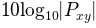
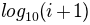
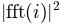
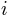
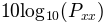
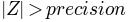

Bases: matplotlib.artist.Artist
The Axes contains most of the figure elements: Axis, Tick, Line2D, Text, Polygon, etc., and sets the coordinate system.
The Axes instance supports callbacks through a callbacks attribute which is a CallbackRegistry instance. The events you can connect to are ‘xlim_changed’ and ‘ylim_changed’ and the callback will be called with func(ax) where ax is the Axes instance.
Plot the autocorrelation of x.
Call signature:
acorr(x, normed=True, detrend=mlab.detrend_none, usevlines=True,
maxlags=10, **kwargs)
If normed = True, normalize the data by the autocorrelation at 0-th lag. x is detrended by the detrend callable (default no normalization).
Data are plotted as plot(lags, c, **kwargs)
Return value is a tuple (lags, c, line) where:
The default linestyle is None and the default marker is 'o', though these can be overridden with keyword args. The cross correlation is performed with numpy.correlate() with mode = 2.
If usevlines is True, vlines() rather than plot() is used to draw vertical lines from the origin to the acorr. Otherwise, the plot style is determined by the kwargs, which are Line2D properties.
maxlags is a positive integer detailing the number of lags to show. The default value of None will return all (2*len(x)-1) lags.
The return value is a tuple (lags, c, linecol, b) where
- linecol is the LineCollection
- b is the x-axis.
Example:
xcorr() is top graph, and acorr() is bottom graph.
(Source code, png, hires.png, pdf)
Add a Collection instance to the axes.
Returns the collection.
Add a Container instance to the axes.
Returns the collection.
Add a Patch p to the list of axes patches; the clipbox will be set to the Axes clipping box. If the transform is not set, it will be set to transData.
Returns the patch.
Add a Table instance to the list of axes tables
Returns the table.
Create an annotation: a piece of text referring to a data point.
Call signature:
annotate(s, xy, xytext=None, xycoords='data',
textcoords='data', arrowprops=None, **kwargs)
Keyword arguments:
Annotate the x, y point xy with text s at x, y location xytext. (If xytext = None, defaults to xy, and if textcoords = None, defaults to xycoords).
arrowprops, if not None, is a dictionary of line properties (see matplotlib.lines.Line2D) for the arrow that connects annotation to the point.
If the dictionary has a key arrowstyle, a FancyArrowPatch instance is created with the given dictionary and is drawn. Otherwise, a YAArow patch instance is created and drawn. Valid keys for YAArow are
| Key | Description |
|---|---|
| width | the width of the arrow in points |
| frac | the fraction of the arrow length occupied by the head |
| headwidth | the width of the base of the arrow head in points |
| shrink | oftentimes it is convenient to have the arrowtip and base a bit away from the text and point being annotated. If d is the distance between the text and annotated point, shrink will shorten the arrow so the tip and base are shink percent of the distance d away from the endpoints. ie, shrink=0.05 is 5% |
| ? | any key for matplotlib.patches.polygon |
Valid keys for FancyArrowPatch are
| Key | Description |
|---|---|
| arrowstyle | the arrow style |
| connectionstyle | the connection style |
| relpos | default is (0.5, 0.5) |
| patchA | default is bounding box of the text |
| patchB | default is None |
| shrinkA | default is 2 points |
| shrinkB | default is 2 points |
| mutation_scale | default is text size (in points) |
| mutation_aspect | default is 1. |
| ? | any key for matplotlib.patches.PathPatch |
xycoords and textcoords are strings that indicate the coordinates of xy and xytext.
| Property | Description |
|---|---|
| ‘figure points’ | points from the lower left corner of the figure |
| ‘figure pixels’ | pixels from the lower left corner of the figure |
| ‘figure fraction’ | 0,0 is lower left of figure and 1,1 is upper, right |
| ‘axes points’ | points from lower left corner of axes |
| ‘axes pixels’ | pixels from lower left corner of axes |
| ‘axes fraction’ | 0,1 is lower left of axes and 1,1 is upper right |
| ‘data’ | use the coordinate system of the object being annotated (default) |
| ‘offset points’ | Specify an offset (in points) from the xy value |
| ‘polar’ | you can specify theta, r for the annotation, even in cartesian plots. Note that if you are using a polar axes, you do not need to specify polar for the coordinate system since that is the native “data” coordinate system. |
If a ‘points’ or ‘pixels’ option is specified, values will be added to the bottom-left and if negative, values will be subtracted from the top-right. Eg:
# 10 points to the right of the left border of the axes and
# 5 points below the top border
xy=(10,-5), xycoords='axes points'
You may use an instance of Transform or Artist. See Annotating Axes for more details.
The annotation_clip attribute contols the visibility of the annotation when it goes outside the axes area. If True, the annotation will only be drawn when the xy is inside the axes. If False, the annotation will always be drawn regardless of its position. The default is None, which behave as True only if xycoords is”data”.
Additional kwargs are Text properties:
Property Description agg_filter unknown alpha float (0.0 transparent through 1.0 opaque) animated [True | False] axes an Axes instance backgroundcolor any matplotlib color bbox rectangle prop dict clip_box a matplotlib.transforms.Bbox instance clip_on [True | False] clip_path [ (Path, Transform) | Patch | None ] color any matplotlib color contains a callable function family or fontfamily or fontname or name [ FONTNAME | ‘serif’ | ‘sans-serif’ | ‘cursive’ | ‘fantasy’ | ‘monospace’ ] figure a matplotlib.figure.Figure instance fontproperties or font_properties a matplotlib.font_manager.FontProperties instance gid an id string horizontalalignment or ha [ ‘center’ | ‘right’ | ‘left’ ] label any string linespacing float (multiple of font size) lod [True | False] multialignment [‘left’ | ‘right’ | ‘center’ ] path_effects unknown picker [None|float|boolean|callable] position (x,y) rasterized [True | False | None] rotation [ angle in degrees | ‘vertical’ | ‘horizontal’ ] rotation_mode unknown size or fontsize [ size in points | ‘xx-small’ | ‘x-small’ | ‘small’ | ‘medium’ | ‘large’ | ‘x-large’ | ‘xx-large’ ] snap unknown stretch or fontstretch [ a numeric value in range 0-1000 | ‘ultra-condensed’ | ‘extra-condensed’ | ‘condensed’ | ‘semi-condensed’ | ‘normal’ | ‘semi-expanded’ | ‘expanded’ | ‘extra-expanded’ | ‘ultra-expanded’ ] style or fontstyle [ ‘normal’ | ‘italic’ | ‘oblique’] text string or anything printable with ‘%s’ conversion. transform Transform instance url a url string variant or fontvariant [ ‘normal’ | ‘small-caps’ ] verticalalignment or va or ma [ ‘center’ | ‘top’ | ‘bottom’ | ‘baseline’ ] visible [True | False] weight or fontweight [ a numeric value in range 0-1000 | ‘ultralight’ | ‘light’ | ‘normal’ | ‘regular’ | ‘book’ | ‘medium’ | ‘roman’ | ‘semibold’ | ‘demibold’ | ‘demi’ | ‘bold’ | ‘heavy’ | ‘extra bold’ | ‘black’ ] x float y float zorder any number
Use _aspect() and _adjustable() to modify the axes box or the view limits.
Add an arrow to the axes.
Call signature:
arrow(x, y, dx, dy, **kwargs)
Draws arrow on specified axis from (x, y) to (x + dx, y + dy).
Optional kwargs control the arrow properties:
Constructor arguments
- length_includes_head:
- True if head is counted in calculating the length.
shape: [‘full’, ‘left’, ‘right’]
- overhang:
- distance that the arrow is swept back (0 overhang means triangular shape).
- head_starts_at_zero:
- If True, the head starts being drawn at coordinate 0 instead of ending at coordinate 0.
Valid kwargs are:
Property Description agg_filter unknown alpha float or None animated [True | False] antialiased or aa [True | False] or None for default axes an Axes instance clip_box a matplotlib.transforms.Bbox instance clip_on [True | False] clip_path [ (Path, Transform) | Patch | None ] color matplotlib color spec contains a callable function edgecolor or ec mpl color spec, or None for default, or ‘none’ for no color facecolor or fc mpl color spec, or None for default, or ‘none’ for no color figure a matplotlib.figure.Figure instance fill [True | False] gid an id string hatch [ ‘/’ | ‘\’ | ‘|’ | ‘-‘ | ‘+’ | ‘x’ | ‘o’ | ‘O’ | ‘.’ | ‘*’ ] label any string linestyle or ls [‘solid’ | ‘dashed’ | ‘dashdot’ | ‘dotted’] linewidth or lw float or None for default lod [True | False] path_effects unknown picker [None|float|boolean|callable] rasterized [True | False | None] snap unknown transform Transform instance url a url string visible [True | False] zorder any number
Example:
(Source code, png, hires.png, pdf)
Autoscale the axis view to the data (toggle).
Convenience method for simple axis view autoscaling. It turns autoscaling on or off, and then, if autoscaling for either axis is on, it performs the autoscaling on the specified axis or axes.
Returns None.
Autoscale the view limits using the data limits. You can selectively autoscale only a single axis, eg, the xaxis by setting scaley to False. The autoscaling preserves any axis direction reversal that has already been done.
The data limits are not updated automatically when artist data are changed after the artist has been added to an Axes instance. In that case, use matplotlib.axes.Axes.relim() prior to calling autoscale_view.
Add a horizontal line across the axis.
Call signature:
axhline(y=0, xmin=0, xmax=1, **kwargs)
Draw a horizontal line at y from xmin to xmax. With the default values of xmin = 0 and xmax = 1, this line will always span the horizontal extent of the axes, regardless of the xlim settings, even if you change them, eg. with the set_xlim() command. That is, the horizontal extent is in axes coords: 0=left, 0.5=middle, 1.0=right but the y location is in data coordinates.
Return value is the Line2D instance. kwargs are the same as kwargs to plot, and can be used to control the line properties. Eg.,
draw a thick red hline at y = 0 that spans the xrange:
>>> axhline(linewidth=4, color='r')
draw a default hline at y = 1 that spans the xrange:
>>> axhline(y=1)
draw a default hline at y = .5 that spans the the middle half of the xrange:
>>> axhline(y=.5, xmin=0.25, xmax=0.75)
Valid kwargs are Line2D properties, with the exception of ‘transform’:
Property Description agg_filter unknown alpha float (0.0 transparent through 1.0 opaque) animated [True | False] antialiased or aa [True | False] axes an Axes instance clip_box a matplotlib.transforms.Bbox instance clip_on [True | False] clip_path [ (Path, Transform) | Patch | None ] color or c any matplotlib color contains a callable function dash_capstyle [‘butt’ | ‘round’ | ‘projecting’] dash_joinstyle [‘miter’ | ‘round’ | ‘bevel’] dashes sequence of on/off ink in points data 2D array (rows are x, y) or two 1D arrays drawstyle [ ‘default’ | ‘steps’ | ‘steps-pre’ | ‘steps-mid’ | ‘steps-post’ ] figure a matplotlib.figure.Figure instance fillstyle [‘full’ | ‘left’ | ‘right’ | ‘bottom’ | ‘top’] gid an id string label any string linestyle or ls [ '-' | '--' | '-.' | ':' | 'None' | ' ' | '' ] and any drawstyle in combination with a linestyle, e.g. 'steps--'. linewidth or lw float value in points lod [True | False] marker [ 7 | 4 | 5 | 6 | 'o' | 'D' | 'h' | 'H' | '_' | '' | 'None' | ' ' | None | '8' | 'p' | ',' | '+' | '.' | 's' | '*' | 'd' | 3 | 0 | 1 | 2 | '1' | '3' | '4' | '2' | 'v' | '<' | '>' | '^' | '|' | 'x' | '$...$' | tuple | Nx2 array ] markeredgecolor or mec any matplotlib color markeredgewidth or mew float value in points markerfacecolor or mfc any matplotlib color markerfacecoloralt or mfcalt any matplotlib color markersize or ms float markevery None | integer | (startind, stride) picker float distance in points or callable pick function fn(artist, event) pickradius float distance in points rasterized [True | False | None] snap unknown solid_capstyle [‘butt’ | ‘round’ | ‘projecting’] solid_joinstyle [‘miter’ | ‘round’ | ‘bevel’] transform a matplotlib.transforms.Transform instance url a url string visible [True | False] xdata 1D array ydata 1D array zorder any number
See also
Add a horizontal span (rectangle) across the axis.
Call signature:
axhspan(ymin, ymax, xmin=0, xmax=1, **kwargs)
y coords are in data units and x coords are in axes (relative 0-1) units.
Draw a horizontal span (rectangle) from ymin to ymax. With the default values of xmin = 0 and xmax = 1, this always spans the xrange, regardless of the xlim settings, even if you change them, eg. with the set_xlim() command. That is, the horizontal extent is in axes coords: 0=left, 0.5=middle, 1.0=right but the y location is in data coordinates.
Return value is a matplotlib.patches.Polygon instance.
Examples:
draw a gray rectangle from y = 0.25-0.75 that spans the horizontal extent of the axes:
>>> axhspan(0.25, 0.75, facecolor='0.5', alpha=0.5)
Valid kwargs are Polygon properties:
Property Description agg_filter unknown alpha float or None animated [True | False] antialiased or aa [True | False] or None for default axes an Axes instance clip_box a matplotlib.transforms.Bbox instance clip_on [True | False] clip_path [ (Path, Transform) | Patch | None ] color matplotlib color spec contains a callable function edgecolor or ec mpl color spec, or None for default, or ‘none’ for no color facecolor or fc mpl color spec, or None for default, or ‘none’ for no color figure a matplotlib.figure.Figure instance fill [True | False] gid an id string hatch [ ‘/’ | ‘\’ | ‘|’ | ‘-‘ | ‘+’ | ‘x’ | ‘o’ | ‘O’ | ‘.’ | ‘*’ ] label any string linestyle or ls [‘solid’ | ‘dashed’ | ‘dashdot’ | ‘dotted’] linewidth or lw float or None for default lod [True | False] path_effects unknown picker [None|float|boolean|callable] rasterized [True | False | None] snap unknown transform Transform instance url a url string visible [True | False] zorder any number
Example:
(Source code, png, hires.png, pdf)
Convenience method for manipulating the x and y view limits and the aspect ratio of the plot. For details, see axis().
kwargs are passed on to set_xlim() and set_ylim()
Add a vertical line across the axes.
Call signature:
axvline(x=0, ymin=0, ymax=1, **kwargs)
Draw a vertical line at x from ymin to ymax. With the default values of ymin = 0 and ymax = 1, this line will always span the vertical extent of the axes, regardless of the ylim settings, even if you change them, eg. with the set_ylim() command. That is, the vertical extent is in axes coords: 0=bottom, 0.5=middle, 1.0=top but the x location is in data coordinates.
Return value is the Line2D instance. kwargs are the same as kwargs to plot, and can be used to control the line properties. Eg.,
draw a thick red vline at x = 0 that spans the yrange:
>>> axvline(linewidth=4, color='r')
draw a default vline at x = 1 that spans the yrange:
>>> axvline(x=1)
draw a default vline at x = .5 that spans the the middle half of the yrange:
>>> axvline(x=.5, ymin=0.25, ymax=0.75)
Valid kwargs are Line2D properties, with the exception of ‘transform’:
Property Description agg_filter unknown alpha float (0.0 transparent through 1.0 opaque) animated [True | False] antialiased or aa [True | False] axes an Axes instance clip_box a matplotlib.transforms.Bbox instance clip_on [True | False] clip_path [ (Path, Transform) | Patch | None ] color or c any matplotlib color contains a callable function dash_capstyle [‘butt’ | ‘round’ | ‘projecting’] dash_joinstyle [‘miter’ | ‘round’ | ‘bevel’] dashes sequence of on/off ink in points data 2D array (rows are x, y) or two 1D arrays drawstyle [ ‘default’ | ‘steps’ | ‘steps-pre’ | ‘steps-mid’ | ‘steps-post’ ] figure a matplotlib.figure.Figure instance fillstyle [‘full’ | ‘left’ | ‘right’ | ‘bottom’ | ‘top’] gid an id string label any string linestyle or ls [ '-' | '--' | '-.' | ':' | 'None' | ' ' | '' ] and any drawstyle in combination with a linestyle, e.g. 'steps--'. linewidth or lw float value in points lod [True | False] marker [ 7 | 4 | 5 | 6 | 'o' | 'D' | 'h' | 'H' | '_' | '' | 'None' | ' ' | None | '8' | 'p' | ',' | '+' | '.' | 's' | '*' | 'd' | 3 | 0 | 1 | 2 | '1' | '3' | '4' | '2' | 'v' | '<' | '>' | '^' | '|' | 'x' | '$...$' | tuple | Nx2 array ] markeredgecolor or mec any matplotlib color markeredgewidth or mew float value in points markerfacecolor or mfc any matplotlib color markerfacecoloralt or mfcalt any matplotlib color markersize or ms float markevery None | integer | (startind, stride) picker float distance in points or callable pick function fn(artist, event) pickradius float distance in points rasterized [True | False | None] snap unknown solid_capstyle [‘butt’ | ‘round’ | ‘projecting’] solid_joinstyle [‘miter’ | ‘round’ | ‘bevel’] transform a matplotlib.transforms.Transform instance url a url string visible [True | False] xdata 1D array ydata 1D array zorder any number
See also
Add a vertical span (rectangle) across the axes.
Call signature:
axvspan(xmin, xmax, ymin=0, ymax=1, **kwargs)
x coords are in data units and y coords are in axes (relative 0-1) units.
Draw a vertical span (rectangle) from xmin to xmax. With the default values of ymin = 0 and ymax = 1, this always spans the yrange, regardless of the ylim settings, even if you change them, eg. with the set_ylim() command. That is, the vertical extent is in axes coords: 0=bottom, 0.5=middle, 1.0=top but the y location is in data coordinates.
Return value is the matplotlib.patches.Polygon instance.
Examples:
draw a vertical green translucent rectangle from x=1.25 to 1.55 that spans the yrange of the axes:
>>> axvspan(1.25, 1.55, facecolor='g', alpha=0.5)
Valid kwargs are Polygon properties:
Property Description agg_filter unknown alpha float or None animated [True | False] antialiased or aa [True | False] or None for default axes an Axes instance clip_box a matplotlib.transforms.Bbox instance clip_on [True | False] clip_path [ (Path, Transform) | Patch | None ] color matplotlib color spec contains a callable function edgecolor or ec mpl color spec, or None for default, or ‘none’ for no color facecolor or fc mpl color spec, or None for default, or ‘none’ for no color figure a matplotlib.figure.Figure instance fill [True | False] gid an id string hatch [ ‘/’ | ‘\’ | ‘|’ | ‘-‘ | ‘+’ | ‘x’ | ‘o’ | ‘O’ | ‘.’ | ‘*’ ] label any string linestyle or ls [‘solid’ | ‘dashed’ | ‘dashdot’ | ‘dotted’] linewidth or lw float or None for default lod [True | False] path_effects unknown picker [None|float|boolean|callable] rasterized [True | False | None] snap unknown transform Transform instance url a url string visible [True | False] zorder any number
See also
Make a bar plot.
Call signature:
bar(left, height, width=0.8, bottom=0, **kwargs)
Make a bar plot with rectangles bounded by:
- left, left + width, bottom, bottom + height
- (left, right, bottom and top edges)
left, height, width, and bottom can be either scalars or sequences
Return value is a list of matplotlib.patches.Rectangle instances.
Required arguments:
Argument Description left the x coordinates of the left sides of the bars height the heights of the bars
Optional keyword arguments:
Keyword Description width the widths of the bars bottom the y coordinates of the bottom edges of the bars color the colors of the bars edgecolor the colors of the bar edges linewidth width of bar edges; None means use default linewidth; 0 means don’t draw edges. xerr if not None, will be used to generate errorbars on the bar chart yerr if not None, will be used to generate errorbars on the bar chart ecolor specifies the color of any errorbar capsize (default 3) determines the length in points of the error bar caps error_kw dictionary of kwargs to be passed to errorbar method. ecolor and capsize may be specified here rather than as independent kwargs. align ‘edge’ (default) | ‘center’ orientation ‘vertical’ | ‘horizontal’ log [False|True] False (default) leaves the orientation axis as-is; True sets it to log scale
For vertical bars, align = ‘edge’ aligns bars by their left edges in left, while align = ‘center’ interprets these values as the x coordinates of the bar centers. For horizontal bars, align = ‘edge’ aligns bars by their bottom edges in bottom, while align = ‘center’ interprets these values as the y coordinates of the bar centers.
The optional arguments color, edgecolor, linewidth, xerr, and yerr can be either scalars or sequences of length equal to the number of bars. This enables you to use bar as the basis for stacked bar charts, or candlestick plots. Detail: xerr and yerr are passed directly to errorbar(), so they can also have shape 2xN for independent specification of lower and upper errors.
Other optional kwargs:
Property Description agg_filter unknown alpha float or None animated [True | False] antialiased or aa [True | False] or None for default axes an Axes instance clip_box a matplotlib.transforms.Bbox instance clip_on [True | False] clip_path [ (Path, Transform) | Patch | None ] color matplotlib color spec contains a callable function edgecolor or ec mpl color spec, or None for default, or ‘none’ for no color facecolor or fc mpl color spec, or None for default, or ‘none’ for no color figure a matplotlib.figure.Figure instance fill [True | False] gid an id string hatch [ ‘/’ | ‘\’ | ‘|’ | ‘-‘ | ‘+’ | ‘x’ | ‘o’ | ‘O’ | ‘.’ | ‘*’ ] label any string linestyle or ls [‘solid’ | ‘dashed’ | ‘dashdot’ | ‘dotted’] linewidth or lw float or None for default lod [True | False] path_effects unknown picker [None|float|boolean|callable] rasterized [True | False | None] snap unknown transform Transform instance url a url string visible [True | False] zorder any number
Example: A stacked bar chart.
(Source code, png, hires.png, pdf)
Plot a 2-D field of barbs.
Call signatures:
barb(U, V, **kw)
barb(U, V, C, **kw)
barb(X, Y, U, V, **kw)
barb(X, Y, U, V, C, **kw)
Arguments:
- X, Y:
- The x and y coordinates of the barb locations (default is head of barb; see pivot kwarg)
- U, V:
- Give the x and y components of the barb shaft
- C:
- An optional array used to map colors to the barbs
All arguments may be 1-D or 2-D arrays or sequences. If X and Y are absent, they will be generated as a uniform grid. If U and V are 2-D arrays but X and Y are 1-D, and if len(X) and len(Y) match the column and row dimensions of U, then X and Y will be expanded with numpy.meshgrid().
U, V, C may be masked arrays, but masked X, Y are not supported at present.
Keyword arguments:
- length:
- Length of the barb in points; the other parts of the barb are scaled against this. Default is 9
- pivot: [ ‘tip’ | ‘middle’ ]
- The part of the arrow that is at the grid point; the arrow rotates about this point, hence the name pivot. Default is ‘tip’
- barbcolor: [ color | color sequence ]
- Specifies the color all parts of the barb except any flags. This parameter is analagous to the edgecolor parameter for polygons, which can be used instead. However this parameter will override facecolor.
- flagcolor: [ color | color sequence ]
- Specifies the color of any flags on the barb. This parameter is analagous to the facecolor parameter for polygons, which can be used instead. However this parameter will override facecolor. If this is not set (and C has not either) then flagcolor will be set to match barbcolor so that the barb has a uniform color. If C has been set, flagcolor has no effect.
- sizes:
A dictionary of coefficients specifying the ratio of a given feature to the length of the barb. Only those values one wishes to override need to be included. These features include:
- ‘spacing’ - space between features (flags, full/half barbs)
- ‘height’ - height (distance from shaft to top) of a flag or full barb
- ‘width’ - width of a flag, twice the width of a full barb
- ‘emptybarb’ - radius of the circle used for low magnitudes
- fill_empty:
- A flag on whether the empty barbs (circles) that are drawn should be filled with the flag color. If they are not filled, they will be drawn such that no color is applied to the center. Default is False
- rounding:
- A flag to indicate whether the vector magnitude should be rounded when allocating barb components. If True, the magnitude is rounded to the nearest multiple of the half-barb increment. If False, the magnitude is simply truncated to the next lowest multiple. Default is True
- barb_increments:
A dictionary of increments specifying values to associate with different parts of the barb. Only those values one wishes to override need to be included.
- ‘half’ - half barbs (Default is 5)
- ‘full’ - full barbs (Default is 10)
- ‘flag’ - flags (default is 50)
- flip_barb:
- Either a single boolean flag or an array of booleans. Single boolean indicates whether the lines and flags should point opposite to normal for all barbs. An array (which should be the same size as the other data arrays) indicates whether to flip for each individual barb. Normal behavior is for the barbs and lines to point right (comes from wind barbs having these features point towards low pressure in the Northern Hemisphere.) Default is False
Barbs are traditionally used in meteorology as a way to plot the speed and direction of wind observations, but can technically be used to plot any two dimensional vector quantity. As opposed to arrows, which give vector magnitude by the length of the arrow, the barbs give more quantitative information about the vector magnitude by putting slanted lines or a triangle for various increments in magnitude, as show schematically below:
: /\ \
: / \ \
: / \ \ \
: / \ \ \
: ------------------------------
The largest increment is given by a triangle (or “flag”). After those come full lines (barbs). The smallest increment is a half line. There is only, of course, ever at most 1 half line. If the magnitude is small and only needs a single half-line and no full lines or triangles, the half-line is offset from the end of the barb so that it can be easily distinguished from barbs with a single full line. The magnitude for the barb shown above would nominally be 65, using the standard increments of 50, 10, and 5.
linewidths and edgecolors can be used to customize the barb. Additional PolyCollection keyword arguments:
Property Description agg_filter unknown alpha float or None animated [True | False] antialiased or antialiaseds Boolean or sequence of booleans array unknown axes an Axes instance clim a length 2 sequence of floats clip_box a matplotlib.transforms.Bbox instance clip_on [True | False] clip_path [ (Path, Transform) | Patch | None ] cmap a colormap or registered colormap name color matplotlib color arg or sequence of rgba tuples colorbar unknown contains a callable function edgecolor or edgecolors matplotlib color arg or sequence of rgba tuples facecolor or facecolors matplotlib color arg or sequence of rgba tuples figure a matplotlib.figure.Figure instance gid an id string label any string linestyle or linestyles or dashes [‘solid’ | ‘dashed’, ‘dashdot’, ‘dotted’ | (offset, on-off-dash-seq) ] linewidth or lw or linewidths float or sequence of floats lod [True | False] norm unknown offsets float or sequence of floats paths unknown picker [None|float|boolean|callable] pickradius unknown rasterized [True | False | None] snap unknown transform Transform instance url a url string urls unknown visible [True | False] zorder any number
Example:
Make a horizontal bar plot.
Call signature:
barh(bottom, width, height=0.8, left=0, **kwargs)
Make a horizontal bar plot with rectangles bounded by:
- left, left + width, bottom, bottom + height
- (left, right, bottom and top edges)
bottom, width, height, and left can be either scalars or sequences
Return value is a list of matplotlib.patches.Rectangle instances.
Required arguments:
Argument Description bottom the vertical positions of the bottom edges of the bars width the lengths of the bars
Optional keyword arguments:
Keyword Description height the heights (thicknesses) of the bars left the x coordinates of the left edges of the bars color the colors of the bars edgecolor the colors of the bar edges linewidth width of bar edges; None means use default linewidth; 0 means don’t draw edges. xerr if not None, will be used to generate errorbars on the bar chart yerr if not None, will be used to generate errorbars on the bar chart ecolor specifies the color of any errorbar capsize (default 3) determines the length in points of the error bar caps align ‘edge’ (default) | ‘center’ log [False|True] False (default) leaves the horizontal axis as-is; True sets it to log scale
Setting align = ‘edge’ aligns bars by their bottom edges in bottom, while align = ‘center’ interprets these values as the y coordinates of the bar centers.
The optional arguments color, edgecolor, linewidth, xerr, and yerr can be either scalars or sequences of length equal to the number of bars. This enables you to use barh as the basis for stacked bar charts, or candlestick plots.
other optional kwargs:
Property Description agg_filter unknown alpha float or None animated [True | False] antialiased or aa [True | False] or None for default axes an Axes instance clip_box a matplotlib.transforms.Bbox instance clip_on [True | False] clip_path [ (Path, Transform) | Patch | None ] color matplotlib color spec contains a callable function edgecolor or ec mpl color spec, or None for default, or ‘none’ for no color facecolor or fc mpl color spec, or None for default, or ‘none’ for no color figure a matplotlib.figure.Figure instance fill [True | False] gid an id string hatch [ ‘/’ | ‘\’ | ‘|’ | ‘-‘ | ‘+’ | ‘x’ | ‘o’ | ‘O’ | ‘.’ | ‘*’ ] label any string linestyle or ls [‘solid’ | ‘dashed’ | ‘dashdot’ | ‘dotted’] linewidth or lw float or None for default lod [True | False] path_effects unknown picker [None|float|boolean|callable] rasterized [True | False | None] snap unknown transform Transform instance url a url string visible [True | False] zorder any number
Make a box and whisker plot.
Call signature:
boxplot(x, notch=0, sym='+', vert=1, whis=1.5,
positions=None, widths=None, patch_artist=False)
Make a box and whisker plot for each column of x or each vector in sequence x. The box extends from the lower to upper quartile values of the data, with a line at the median. The whiskers extend from the box to show the range of the data. Flier points are those past the end of the whiskers.
Function Arguments:
- x :
- Array or a sequence of vectors.
- notch : [ 0 (default) | 1]
- If 0, produce a rectangular box plot. If 1, produce a notched box plot
- sym :
- (default ‘b+’) is the default symbol for flier points. Enter an empty string (‘’) if you don’t want to show fliers.
- vert : [1 (default) | 0]
- If 1, make the boxes vertical. If 0, make horizontal boxes. (Odd, but kept for compatibility with MATLAB boxplots)
- whis : (default 1.5)
- Defines the length of the whiskers as a function of the inner quartile range. They extend to the most extreme data point within ( whis*(75%-25%) ) data range.
- bootstrap : [ None (default) | integer ]
- Specifies whether to bootstrap the confidence intervals around the median for notched boxplots. If None, no bootstrapping is performed, and notches are calculated using a Gaussian-based asymptotic approximation (see McGill, R., Tukey, J.W., and Larsen, W.A., 1978, and Kendall and Stuart, 1967). Otherwise, bootstrap specifies the number of times to bootstrap the median to determine its 95% confidence intervals. Values between 1000 and 10000 are recommended.
- positions : (default 1,2,...,n)
- Sets the horizontal positions of the boxes. The ticks and limits are automatically set to match the positions.
- widths : [ scalar | array ]
- Either a scalar or a vector to set the width of each box. The default is 0.5, or 0.15*(distance between extreme positions) if that is smaller.
- patch_artist : boolean
- If False (default), produce boxes with the Line2D artist. If True, produce boxes with the Patch artist.
Returns a dictionary mapping each component of the boxplot to a list of the Line2D instances created (unless patch_artist was True. See above.).
Example:
Plot horizontal bars.
Call signature:
broken_barh(self, xranges, yrange, **kwargs)
A collection of horizontal bars spanning yrange with a sequence of xranges.
Required arguments:
Argument Description xranges sequence of (xmin, xwidth) yrange sequence of (ymin, ywidth)
kwargs are matplotlib.collections.BrokenBarHCollection properties:
Property Description agg_filter unknown alpha float or None animated [True | False] antialiased or antialiaseds Boolean or sequence of booleans array unknown axes an Axes instance clim a length 2 sequence of floats clip_box a matplotlib.transforms.Bbox instance clip_on [True | False] clip_path [ (Path, Transform) | Patch | None ] cmap a colormap or registered colormap name color matplotlib color arg or sequence of rgba tuples colorbar unknown contains a callable function edgecolor or edgecolors matplotlib color arg or sequence of rgba tuples facecolor or facecolors matplotlib color arg or sequence of rgba tuples figure a matplotlib.figure.Figure instance gid an id string label any string linestyle or linestyles or dashes [‘solid’ | ‘dashed’, ‘dashdot’, ‘dotted’ | (offset, on-off-dash-seq) ] linewidth or lw or linewidths float or sequence of floats lod [True | False] norm unknown offsets float or sequence of floats paths unknown picker [None|float|boolean|callable] pickradius unknown rasterized [True | False | None] snap unknown transform Transform instance url a url string urls unknown visible [True | False] zorder any number
these can either be a single argument, ie:
facecolors = 'black'
or a sequence of arguments for the various bars, ie:
facecolors = ('black', 'red', 'green')
Example:
(Source code, png, hires.png, pdf)
Return True if this axes supports any pan/zoom button functionality.
Return True if this axes supports the zoom box button functionality.
Clear the current axes.
Label a contour plot.
Call signature:
clabel(cs, **kwargs)
Adds labels to line contours in cs, where cs is a ContourSet object returned by contour.
clabel(cs, v, **kwargs)
only labels contours listed in v.
Optional keyword arguments:
- fontsize:
- See http://matplotlib.sf.net/fonts.html
- colors:
- if None, the color of each label matches the color of the corresponding contour
- if one string color, e.g. colors = ‘r’ or colors = ‘red’, all labels will be plotted in this color
- if a tuple of matplotlib color args (string, float, rgb, etc), different labels will be plotted in different colors in the order specified
- inline:
- controls whether the underlying contour is removed or not. Default is True.
- inline_spacing:
- space in pixels to leave on each side of label when placing inline. Defaults to 5. This spacing will be exact for labels at locations where the contour is straight, less so for labels on curved contours.
- fmt:
- a format string for the label. Default is ‘%1.3f’ Alternatively, this can be a dictionary matching contour levels with arbitrary strings to use for each contour level (i.e., fmt[level]=string), or it can be any callable, such as a Formatter instance, that returns a string when called with a numeric contour level.
- manual:
- if True, contour labels will be placed manually using mouse clicks. Click the first button near a contour to add a label, click the second button (or potentially both mouse buttons at once) to finish adding labels. The third button can be used to remove the last label added, but only if labels are not inline. Alternatively, the keyboard can be used to select label locations (enter to end label placement, delete or backspace act like the third mouse button, and any other key will select a label location).
- rightside_up:
- if True (default), label rotations will always be plus or minus 90 degrees from level.
- use_clabeltext:
- if True (default is False), ClabelText class (instead of matplotlib.Text) is used to create labels. ClabelText recalculates rotation angles of texts during the drawing time, therefore this can be used if aspect of the axes changes.
clear the axes
Plot the coherence between x and y.
Call signature:
cohere(x, y, NFFT=256, Fs=2, Fc=0, detrend = mlab.detrend_none,
window = mlab.window_hanning, noverlap=0, pad_to=None,
sides='default', scale_by_freq=None, **kwargs)
Plot the coherence between x and y. Coherence is the normalized cross spectral density:

Keyword arguments:
- NFFT: integer
- The number of data points used in each block for the FFT. Must be even; a power 2 is most efficient. The default value is 256. This should NOT be used to get zero padding, or the scaling of the result will be incorrect. Use pad_to for this instead.
- Fs: scalar
- The sampling frequency (samples per time unit). It is used to calculate the Fourier frequencies, freqs, in cycles per time unit. The default value is 2.
- detrend: callable
- The function applied to each segment before fft-ing, designed to remove the mean or linear trend. Unlike in MATLAB, where the detrend parameter is a vector, in matplotlib is it a function. The pylab module defines detrend_none(), detrend_mean(), and detrend_linear(), but you can use a custom function as well.
- window: callable or ndarray
- A function or a vector of length NFFT. To create window vectors see window_hanning(), window_none(), numpy.blackman(), numpy.hamming(), numpy.bartlett(), scipy.signal(), scipy.signal.get_window(), etc. The default is window_hanning(). If a function is passed as the argument, it must take a data segment as an argument and return the windowed version of the segment.
- noverlap: integer
- The number of points of overlap between blocks. The default value is 0 (no overlap).
- pad_to: integer
- The number of points to which the data segment is padded when performing the FFT. This can be different from NFFT, which specifies the number of data points used. While not increasing the actual resolution of the psd (the minimum distance between resolvable peaks), this can give more points in the plot, allowing for more detail. This corresponds to the n parameter in the call to fft(). The default is None, which sets pad_to equal to NFFT
- sides: [ ‘default’ | ‘onesided’ | ‘twosided’ ]
- Specifies which sides of the PSD to return. Default gives the default behavior, which returns one-sided for real data and both for complex data. ‘onesided’ forces the return of a one-sided PSD, while ‘twosided’ forces two-sided.
- scale_by_freq: boolean
- Specifies whether the resulting density values should be scaled by the scaling frequency, which gives density in units of Hz^-1. This allows for integration over the returned frequency values. The default is True for MATLAB compatibility.
- Fc: integer
- The center frequency of x (defaults to 0), which offsets the x extents of the plot to reflect the frequency range used when a signal is acquired and then filtered and downsampled to baseband.
The return value is a tuple (Cxy, f), where f are the frequencies of the coherence vector.
kwargs are applied to the lines.
References:
- Bendat & Piersol – Random Data: Analysis and Measurement Procedures, John Wiley & Sons (1986)
kwargs control the Line2D properties of the coherence plot:
Property Description agg_filter unknown alpha float (0.0 transparent through 1.0 opaque) animated [True | False] antialiased or aa [True | False] axes an Axes instance clip_box a matplotlib.transforms.Bbox instance clip_on [True | False] clip_path [ (Path, Transform) | Patch | None ] color or c any matplotlib color contains a callable function dash_capstyle [‘butt’ | ‘round’ | ‘projecting’] dash_joinstyle [‘miter’ | ‘round’ | ‘bevel’] dashes sequence of on/off ink in points data 2D array (rows are x, y) or two 1D arrays drawstyle [ ‘default’ | ‘steps’ | ‘steps-pre’ | ‘steps-mid’ | ‘steps-post’ ] figure a matplotlib.figure.Figure instance fillstyle [‘full’ | ‘left’ | ‘right’ | ‘bottom’ | ‘top’] gid an id string label any string linestyle or ls [ '-' | '--' | '-.' | ':' | 'None' | ' ' | '' ] and any drawstyle in combination with a linestyle, e.g. 'steps--'. linewidth or lw float value in points lod [True | False] marker [ 7 | 4 | 5 | 6 | 'o' | 'D' | 'h' | 'H' | '_' | '' | 'None' | ' ' | None | '8' | 'p' | ',' | '+' | '.' | 's' | '*' | 'd' | 3 | 0 | 1 | 2 | '1' | '3' | '4' | '2' | 'v' | '<' | '>' | '^' | '|' | 'x' | '$...$' | tuple | Nx2 array ] markeredgecolor or mec any matplotlib color markeredgewidth or mew float value in points markerfacecolor or mfc any matplotlib color markerfacecoloralt or mfcalt any matplotlib color markersize or ms float markevery None | integer | (startind, stride) picker float distance in points or callable pick function fn(artist, event) pickradius float distance in points rasterized [True | False | None] snap unknown solid_capstyle [‘butt’ | ‘round’ | ‘projecting’] solid_joinstyle [‘miter’ | ‘round’ | ‘bevel’] transform a matplotlib.transforms.Transform instance url a url string visible [True | False] xdata 1D array ydata 1D array zorder any number
Example:
(Source code, png, hires.png, pdf)

Register observers to be notified when certain events occur. Register with callback functions with the following signatures. The function has the following signature:
func(ax) # where ax is the instance making the callback.
The following events can be connected to:
‘xlim_changed’,’ylim_changed’
The connection id is is returned - you can use this with disconnect to disconnect from the axes event
Test whether the mouse event occured in the axes.
Returns True / False, {}
Returns True if the point (tuple of x,y) is inside the axes (the area defined by the its patch). A pixel coordinate is required.
Plot contours.
contour() and contourf() draw contour lines and filled contours, respectively. Except as noted, function signatures and return values are the same for both versions.
contourf() differs from the MATLAB version in that it does not draw the polygon edges. To draw edges, add line contours with calls to contour().
Call signatures:
contour(Z)
make a contour plot of an array Z. The level values are chosen automatically.
contour(X,Y,Z)
X, Y specify the (x, y) coordinates of the surface
contour(Z,N)
contour(X,Y,Z,N)
contour N automatically-chosen levels.
contour(Z,V)
contour(X,Y,Z,V)
draw contour lines at the values specified in sequence V
contourf(..., V)
fill the len(V)-1 regions between the values in V
contour(Z, **kwargs)
Use keyword args to control colors, linewidth, origin, cmap ... see below for more details.
X and Y must both be 2-D with the same shape as Z, or they must both be 1-D such that len(X) is the number of columns in Z and len(Y) is the number of rows in Z.
C = contour(...) returns a QuadContourSet object.
Optional keyword arguments:
- colors: [ None | string | (mpl_colors) ]
If None, the colormap specified by cmap will be used.
If a string, like ‘r’ or ‘red’, all levels will be plotted in this color.
If a tuple of matplotlib color args (string, float, rgb, etc), different levels will be plotted in different colors in the order specified.
- alpha: float
- The alpha blending value
- cmap: [ None | Colormap ]
- A cm Colormap instance or None. If cmap is None and colors is None, a default Colormap is used.
- norm: [ None | Normalize ]
- A matplotlib.colors.Normalize instance for scaling data values to colors. If norm is None and colors is None, the default linear scaling is used.
- levels: [level0, level1, ..., leveln]
- A list of floating point numbers indicating the level curves to draw; eg to draw just the zero contour pass levels=[0]
- origin: [ None | ‘upper’ | ‘lower’ | ‘image’ ]
If None, the first value of Z will correspond to the lower left corner, location (0,0). If ‘image’, the rc value for image.origin will be used.
This keyword is not active if X and Y are specified in the call to contour.
extent: [ None | (x0,x1,y0,y1) ]
If origin is not None, then extent is interpreted as in matplotlib.pyplot.imshow(): it gives the outer pixel boundaries. In this case, the position of Z[0,0] is the center of the pixel, not a corner. If origin is None, then (x0, y0) is the position of Z[0,0], and (x1, y1) is the position of Z[-1,-1].
This keyword is not active if X and Y are specified in the call to contour.
- locator: [ None | ticker.Locator subclass ]
- If locator is None, the default MaxNLocator is used. The locator is used to determine the contour levels if they are not given explicitly via the V argument.
- extend: [ ‘neither’ | ‘both’ | ‘min’ | ‘max’ ]
- Unless this is ‘neither’, contour levels are automatically added to one or both ends of the range so that all data are included. These added ranges are then mapped to the special colormap values which default to the ends of the colormap range, but can be set via matplotlib.colors.Colormap.set_under() and matplotlib.colors.Colormap.set_over() methods.
- xunits, yunits: [ None | registered units ]
- Override axis units by specifying an instance of a matplotlib.units.ConversionInterface.
- antialiased: [ True | False ]
- enable antialiasing, overriding the defaults. For filled contours, the default is True. For line contours, it is taken from rcParams[‘lines.antialiased’].
contour-only keyword arguments:
- linewidths: [ None | number | tuple of numbers ]
If linewidths is None, the default width in lines.linewidth in matplotlibrc is used.
If a number, all levels will be plotted with this linewidth.
If a tuple, different levels will be plotted with different linewidths in the order specified
- linestyles: [ None | ‘solid’ | ‘dashed’ | ‘dashdot’ | ‘dotted’ ]
If linestyles is None, the ‘solid’ is used.
linestyles can also be an iterable of the above strings specifying a set of linestyles to be used. If this iterable is shorter than the number of contour levels it will be repeated as necessary.
If contour is using a monochrome colormap and the contour level is less than 0, then the linestyle specified in contour.negative_linestyle in matplotlibrc will be used.
contourf-only keyword arguments:
- nchunk: [ 0 | integer ]
- If 0, no subdivision of the domain. Specify a positive integer to divide the domain into subdomains of roughly nchunk by nchunk points. This may never actually be advantageous, so this option may be removed. Chunking introduces artifacts at the chunk boundaries unless antialiased is False.
Note: contourf fills intervals that are closed at the top; that is, for boundaries z1 and z2, the filled region is:
z1 < z <= z2
There is one exception: if the lowest boundary coincides with the minimum value of the z array, then that minimum value will be included in the lowest interval.
Examples:
Plot contours.
contour() and contourf() draw contour lines and filled contours, respectively. Except as noted, function signatures and return values are the same for both versions.
contourf() differs from the MATLAB version in that it does not draw the polygon edges. To draw edges, add line contours with calls to contour().
Call signatures:
contour(Z)
make a contour plot of an array Z. The level values are chosen automatically.
contour(X,Y,Z)
X, Y specify the (x, y) coordinates of the surface
contour(Z,N)
contour(X,Y,Z,N)
contour N automatically-chosen levels.
contour(Z,V)
contour(X,Y,Z,V)
draw contour lines at the values specified in sequence V
contourf(..., V)
fill the len(V)-1 regions between the values in V
contour(Z, **kwargs)
Use keyword args to control colors, linewidth, origin, cmap ... see below for more details.
X and Y must both be 2-D with the same shape as Z, or they must both be 1-D such that len(X) is the number of columns in Z and len(Y) is the number of rows in Z.
C = contour(...) returns a QuadContourSet object.
Optional keyword arguments:
- colors: [ None | string | (mpl_colors) ]
If None, the colormap specified by cmap will be used.
If a string, like ‘r’ or ‘red’, all levels will be plotted in this color.
If a tuple of matplotlib color args (string, float, rgb, etc), different levels will be plotted in different colors in the order specified.
- alpha: float
- The alpha blending value
- cmap: [ None | Colormap ]
- A cm Colormap instance or None. If cmap is None and colors is None, a default Colormap is used.
- norm: [ None | Normalize ]
- A matplotlib.colors.Normalize instance for scaling data values to colors. If norm is None and colors is None, the default linear scaling is used.
- levels: [level0, level1, ..., leveln]
- A list of floating point numbers indicating the level curves to draw; eg to draw just the zero contour pass levels=[0]
- origin: [ None | ‘upper’ | ‘lower’ | ‘image’ ]
If None, the first value of Z will correspond to the lower left corner, location (0,0). If ‘image’, the rc value for image.origin will be used.
This keyword is not active if X and Y are specified in the call to contour.
extent: [ None | (x0,x1,y0,y1) ]
If origin is not None, then extent is interpreted as in matplotlib.pyplot.imshow(): it gives the outer pixel boundaries. In this case, the position of Z[0,0] is the center of the pixel, not a corner. If origin is None, then (x0, y0) is the position of Z[0,0], and (x1, y1) is the position of Z[-1,-1].
This keyword is not active if X and Y are specified in the call to contour.
- locator: [ None | ticker.Locator subclass ]
- If locator is None, the default MaxNLocator is used. The locator is used to determine the contour levels if they are not given explicitly via the V argument.
- extend: [ ‘neither’ | ‘both’ | ‘min’ | ‘max’ ]
- Unless this is ‘neither’, contour levels are automatically added to one or both ends of the range so that all data are included. These added ranges are then mapped to the special colormap values which default to the ends of the colormap range, but can be set via matplotlib.colors.Colormap.set_under() and matplotlib.colors.Colormap.set_over() methods.
- xunits, yunits: [ None | registered units ]
- Override axis units by specifying an instance of a matplotlib.units.ConversionInterface.
- antialiased: [ True | False ]
- enable antialiasing, overriding the defaults. For filled contours, the default is True. For line contours, it is taken from rcParams[‘lines.antialiased’].
contour-only keyword arguments:
- linewidths: [ None | number | tuple of numbers ]
If linewidths is None, the default width in lines.linewidth in matplotlibrc is used.
If a number, all levels will be plotted with this linewidth.
If a tuple, different levels will be plotted with different linewidths in the order specified
- linestyles: [ None | ‘solid’ | ‘dashed’ | ‘dashdot’ | ‘dotted’ ]
If linestyles is None, the ‘solid’ is used.
linestyles can also be an iterable of the above strings specifying a set of linestyles to be used. If this iterable is shorter than the number of contour levels it will be repeated as necessary.
If contour is using a monochrome colormap and the contour level is less than 0, then the linestyle specified in contour.negative_linestyle in matplotlibrc will be used.
contourf-only keyword arguments:
- nchunk: [ 0 | integer ]
- If 0, no subdivision of the domain. Specify a positive integer to divide the domain into subdomains of roughly nchunk by nchunk points. This may never actually be advantageous, so this option may be removed. Chunking introduces artifacts at the chunk boundaries unless antialiased is False.
Note: contourf fills intervals that are closed at the top; that is, for boundaries z1 and z2, the filled region is:
z1 < z <= z2
There is one exception: if the lowest boundary coincides with the minimum value of the z array, then that minimum value will be included in the lowest interval.
Examples:
Plot cross-spectral density.
Call signature:
csd(x, y, NFFT=256, Fs=2, Fc=0, detrend=mlab.detrend_none,
window=mlab.window_hanning, noverlap=0, pad_to=None,
sides='default', scale_by_freq=None, **kwargs)
The cross spectral density  by Welch’s average
periodogram method. The vectors x and y are divided into
NFFT length segments. Each segment is detrended by function
detrend and windowed by function window. The product of
the direct FFTs of x and y are averaged over each segment
to compute , with a scaling to correct for power
loss due to windowing.
by Welch’s average
periodogram method. The vectors x and y are divided into
NFFT length segments. Each segment is detrended by function
detrend and windowed by function window. The product of
the direct FFTs of x and y are averaged over each segment
to compute , with a scaling to correct for power
loss due to windowing.
Returns the tuple (Pxy, freqs). P is the cross spectrum (complex valued), and  is plotted.
Keyword arguments:
- NFFT: integer
- The number of data points used in each block for the FFT. Must be even; a power 2 is most efficient. The default value is 256. This should NOT be used to get zero padding, or the scaling of the result will be incorrect. Use pad_to for this instead.
- Fs: scalar
- The sampling frequency (samples per time unit). It is used to calculate the Fourier frequencies, freqs, in cycles per time unit. The default value is 2.
- detrend: callable
- The function applied to each segment before fft-ing, designed to remove the mean or linear trend. Unlike in MATLAB, where the detrend parameter is a vector, in matplotlib is it a function. The pylab module defines detrend_none(), detrend_mean(), and detrend_linear(), but you can use a custom function as well.
- window: callable or ndarray
- A function or a vector of length NFFT. To create window vectors see window_hanning(), window_none(), numpy.blackman(), numpy.hamming(), numpy.bartlett(), scipy.signal(), scipy.signal.get_window(), etc. The default is window_hanning(). If a function is passed as the argument, it must take a data segment as an argument and return the windowed version of the segment.
- noverlap: integer
- The number of points of overlap between blocks. The default value is 0 (no overlap).
- pad_to: integer
- The number of points to which the data segment is padded when performing the FFT. This can be different from NFFT, which specifies the number of data points used. While not increasing the actual resolution of the psd (the minimum distance between resolvable peaks), this can give more points in the plot, allowing for more detail. This corresponds to the n parameter in the call to fft(). The default is None, which sets pad_to equal to NFFT
- sides: [ ‘default’ | ‘onesided’ | ‘twosided’ ]
- Specifies which sides of the PSD to return. Default gives the default behavior, which returns one-sided for real data and both for complex data. ‘onesided’ forces the return of a one-sided PSD, while ‘twosided’ forces two-sided.
- scale_by_freq: boolean
- Specifies whether the resulting density values should be scaled by the scaling frequency, which gives density in units of Hz^-1. This allows for integration over the returned frequency values. The default is True for MATLAB compatibility.
- Fc: integer
- The center frequency of x (defaults to 0), which offsets the x extents of the plot to reflect the frequency range used when a signal is acquired and then filtered and downsampled to baseband.
kwargs control the Line2D properties:
Property Description agg_filter unknown alpha float (0.0 transparent through 1.0 opaque) animated [True | False] antialiased or aa [True | False] axes an Axes instance clip_box a matplotlib.transforms.Bbox instance clip_on [True | False] clip_path [ (Path, Transform) | Patch | None ] color or c any matplotlib color contains a callable function dash_capstyle [‘butt’ | ‘round’ | ‘projecting’] dash_joinstyle [‘miter’ | ‘round’ | ‘bevel’] dashes sequence of on/off ink in points data 2D array (rows are x, y) or two 1D arrays drawstyle [ ‘default’ | ‘steps’ | ‘steps-pre’ | ‘steps-mid’ | ‘steps-post’ ] figure a matplotlib.figure.Figure instance fillstyle [‘full’ | ‘left’ | ‘right’ | ‘bottom’ | ‘top’] gid an id string label any string linestyle or ls [ '-' | '--' | '-.' | ':' | 'None' | ' ' | '' ] and any drawstyle in combination with a linestyle, e.g. 'steps--'. linewidth or lw float value in points lod [True | False] marker [ 7 | 4 | 5 | 6 | 'o' | 'D' | 'h' | 'H' | '_' | '' | 'None' | ' ' | None | '8' | 'p' | ',' | '+' | '.' | 's' | '*' | 'd' | 3 | 0 | 1 | 2 | '1' | '3' | '4' | '2' | 'v' | '<' | '>' | '^' | '|' | 'x' | '$...$' | tuple | Nx2 array ] markeredgecolor or mec any matplotlib color markeredgewidth or mew float value in points markerfacecolor or mfc any matplotlib color markerfacecoloralt or mfcalt any matplotlib color markersize or ms float markevery None | integer | (startind, stride) picker float distance in points or callable pick function fn(artist, event) pickradius float distance in points rasterized [True | False | None] snap unknown solid_capstyle [‘butt’ | ‘round’ | ‘projecting’] solid_joinstyle [‘miter’ | ‘round’ | ‘bevel’] transform a matplotlib.transforms.Transform instance url a url string visible [True | False] xdata 1D array ydata 1D array zorder any number
Example:
(Source code, png, hires.png, pdf)
disconnect from the Axes event.
Called when the mouse moves during a pan operation.
button is the mouse button number:
key is a “shift” key
x, y are the mouse coordinates in display coords.
Note
Intended to be overridden by new projection types.
Draw everything (plot lines, axes, labels)
This method can only be used after an initial draw which caches the renderer. It is used to efficiently update Axes data (axis ticks, labels, etc are not updated)
Called when a pan operation completes (when the mouse button is up.)
Note
Intended to be overridden by new projection types.
Plot an errorbar graph.
Call signature:
errorbar(x, y, yerr=None, xerr=None,
fmt='-', ecolor=None, elinewidth=None, capsize=3,
barsabove=False, lolims=False, uplims=False,
xlolims=False, xuplims=False)
Plot x versus y with error deltas in yerr and xerr. Vertical errorbars are plotted if yerr is not None. Horizontal errorbars are plotted if xerr is not None.
x, y, xerr, and yerr can all be scalars, which plots a single error bar at x, y.
Optional keyword arguments:
- xerr/yerr: [ scalar | N, Nx1, or 2xN array-like ]
If a scalar number, len(N) array-like object, or an Nx1 array-like object, errorbars are drawn +/- value.
If a sequence of shape 2xN, errorbars are drawn at -row1 and +row2
- fmt: ‘-‘
- The plot format symbol. If fmt is None, only the errorbars are plotted. This is used for adding errorbars to a bar plot, for example.
- ecolor: [ None | mpl color ]
- a matplotlib color arg which gives the color the errorbar lines; if None, use the marker color.
- elinewidth: scalar
- the linewidth of the errorbar lines. If None, use the linewidth.
- capsize: scalar
- the size of the error bar caps in points
- barsabove: [ True | False ]
- if True, will plot the errorbars above the plot symbols. Default is below.
- lolims / uplims / xlolims / xuplims: [ False | True ]
- These arguments can be used to indicate that a value gives only upper/lower limits. In that case a caret symbol is used to indicate this. lims-arguments may be of the same type as xerr and yerr.
All other keyword arguments are passed on to the plot command for the markers. For example, this code makes big red squares with thick green edges:
x,y,yerr = rand(3,10)
errorbar(x, y, yerr, marker='s',
mfc='red', mec='green', ms=20, mew=4)
where mfc, mec, ms and mew are aliases for the longer property names, markerfacecolor, markeredgecolor, markersize and markeredgewith.
valid kwargs for the marker properties are
Property Description agg_filter unknown alpha float (0.0 transparent through 1.0 opaque) animated [True | False] antialiased or aa [True | False] axes an Axes instance clip_box a matplotlib.transforms.Bbox instance clip_on [True | False] clip_path [ (Path, Transform) | Patch | None ] color or c any matplotlib color contains a callable function dash_capstyle [‘butt’ | ‘round’ | ‘projecting’] dash_joinstyle [‘miter’ | ‘round’ | ‘bevel’] dashes sequence of on/off ink in points data 2D array (rows are x, y) or two 1D arrays drawstyle [ ‘default’ | ‘steps’ | ‘steps-pre’ | ‘steps-mid’ | ‘steps-post’ ] figure a matplotlib.figure.Figure instance fillstyle [‘full’ | ‘left’ | ‘right’ | ‘bottom’ | ‘top’] gid an id string label any string linestyle or ls [ '-' | '--' | '-.' | ':' | 'None' | ' ' | '' ] and any drawstyle in combination with a linestyle, e.g. 'steps--'. linewidth or lw float value in points lod [True | False] marker [ 7 | 4 | 5 | 6 | 'o' | 'D' | 'h' | 'H' | '_' | '' | 'None' | ' ' | None | '8' | 'p' | ',' | '+' | '.' | 's' | '*' | 'd' | 3 | 0 | 1 | 2 | '1' | '3' | '4' | '2' | 'v' | '<' | '>' | '^' | '|' | 'x' | '$...$' | tuple | Nx2 array ] markeredgecolor or mec any matplotlib color markeredgewidth or mew float value in points markerfacecolor or mfc any matplotlib color markerfacecoloralt or mfcalt any matplotlib color markersize or ms float markevery None | integer | (startind, stride) picker float distance in points or callable pick function fn(artist, event) pickradius float distance in points rasterized [True | False | None] snap unknown solid_capstyle [‘butt’ | ‘round’ | ‘projecting’] solid_joinstyle [‘miter’ | ‘round’ | ‘bevel’] transform a matplotlib.transforms.Transform instance url a url string visible [True | False] xdata 1D array ydata 1D array zorder any number
Returns (plotline, caplines, barlinecols):
- plotline: Line2D instance
- x, y plot markers and/or line
- caplines: list of error bar cap
- Line2D instances
- barlinecols: list of
- LineCollection instances for the horizontal and vertical error ranges.
Example:
Plot filled polygons.
Call signature:
fill(*args, **kwargs)
args is a variable length argument, allowing for multiple x, y pairs with an optional color format string; see plot() for details on the argument parsing. For example, to plot a polygon with vertices at x, y in blue.:
ax.fill(x,y, 'b' )
An arbitrary number of x, y, color groups can be specified:
ax.fill(x1, y1, 'g', x2, y2, 'r')
Return value is a list of Patch instances that were added.
The same color strings that plot() supports are supported by the fill format string.
If you would like to fill below a curve, eg. shade a region between 0 and y along x, use fill_between()
The closed kwarg will close the polygon when True (default).
kwargs control the Polygon properties:
Property Description agg_filter unknown alpha float or None animated [True | False] antialiased or aa [True | False] or None for default axes an Axes instance clip_box a matplotlib.transforms.Bbox instance clip_on [True | False] clip_path [ (Path, Transform) | Patch | None ] color matplotlib color spec contains a callable function edgecolor or ec mpl color spec, or None for default, or ‘none’ for no color facecolor or fc mpl color spec, or None for default, or ‘none’ for no color figure a matplotlib.figure.Figure instance fill [True | False] gid an id string hatch [ ‘/’ | ‘\’ | ‘|’ | ‘-‘ | ‘+’ | ‘x’ | ‘o’ | ‘O’ | ‘.’ | ‘*’ ] label any string linestyle or ls [‘solid’ | ‘dashed’ | ‘dashdot’ | ‘dotted’] linewidth or lw float or None for default lod [True | False] path_effects unknown picker [None|float|boolean|callable] rasterized [True | False | None] snap unknown transform Transform instance url a url string visible [True | False] zorder any number
Example:
(Source code, png, hires.png, pdf)
Make filled polygons between two curves.
Call signature:
fill_between(x, y1, y2=0, where=None, **kwargs)
Create a PolyCollection filling the regions between y1 and y2 where where==True
- x :
- An N-length array of the x data
- y1 :
- An N-length array (or scalar) of the y data
- y2 :
- An N-length array (or scalar) of the y data
- where :
- If None, default to fill between everywhere. If not None, it is an N-length numpy boolean array and the fill will only happen over the regions where where==True.
- interpolate :
- If True, interpolate between the two lines to find the precise point of intersection. Otherwise, the start and end points of the filled region will only occur on explicit values in the x array.
- kwargs :
- Keyword args passed on to the PolyCollection.
kwargs control the Polygon properties:
Property Description agg_filter unknown alpha float or None animated [True | False] antialiased or antialiaseds Boolean or sequence of booleans array unknown axes an Axes instance clim a length 2 sequence of floats clip_box a matplotlib.transforms.Bbox instance clip_on [True | False] clip_path [ (Path, Transform) | Patch | None ] cmap a colormap or registered colormap name color matplotlib color arg or sequence of rgba tuples colorbar unknown contains a callable function edgecolor or edgecolors matplotlib color arg or sequence of rgba tuples facecolor or facecolors matplotlib color arg or sequence of rgba tuples figure a matplotlib.figure.Figure instance gid an id string label any string linestyle or linestyles or dashes [‘solid’ | ‘dashed’, ‘dashdot’, ‘dotted’ | (offset, on-off-dash-seq) ] linewidth or lw or linewidths float or sequence of floats lod [True | False] norm unknown offsets float or sequence of floats paths unknown picker [None|float|boolean|callable] pickradius unknown rasterized [True | False | None] snap unknown transform Transform instance url a url string urls unknown visible [True | False] zorder any number
See also
Make filled polygons between two horizontal curves.
Call signature:
fill_between(y, x1, x2=0, where=None, **kwargs)
Create a PolyCollection filling the regions between x1 and x2 where where==True
- y :
- An N-length array of the y data
- x1 :
- An N-length array (or scalar) of the x data
- x2 :
- An N-length array (or scalar) of the x data
- where :
- If None, default to fill between everywhere. If not None, it is a N length numpy boolean array and the fill will only happen over the regions where where==True
- kwargs :
- keyword args passed on to the PolyCollection
kwargs control the Polygon properties:
Property Description agg_filter unknown alpha float or None animated [True | False] antialiased or antialiaseds Boolean or sequence of booleans array unknown axes an Axes instance clim a length 2 sequence of floats clip_box a matplotlib.transforms.Bbox instance clip_on [True | False] clip_path [ (Path, Transform) | Patch | None ] cmap a colormap or registered colormap name color matplotlib color arg or sequence of rgba tuples colorbar unknown contains a callable function edgecolor or edgecolors matplotlib color arg or sequence of rgba tuples facecolor or facecolors matplotlib color arg or sequence of rgba tuples figure a matplotlib.figure.Figure instance gid an id string label any string linestyle or linestyles or dashes [‘solid’ | ‘dashed’, ‘dashdot’, ‘dotted’ | (offset, on-off-dash-seq) ] linewidth or lw or linewidths float or sequence of floats lod [True | False] norm unknown offsets float or sequence of floats paths unknown picker [None|float|boolean|callable] pickradius unknown rasterized [True | False | None] snap unknown transform Transform instance url a url string urls unknown visible [True | False] zorder any number
See also
Return a format string formatting the x, y coord
Return x string formatted. This function will use the attribute self.fmt_xdata if it is callable, else will fall back on the xaxis major formatter
Return y string formatted. This function will use the fmt_ydata attribute if it is callable, else will fall back on the yaxis major formatter
Get whether autoscaling is applied for both axes on plot commands
Get whether autoscaling for the x-axis is applied on plot commands
Get whether autoscaling for the y-axis is applied on plot commands
return axes_locator
Return the axis background color
Get whether axis below is true or not
Return a list of artists the axes contains.
Deprecated since version 0.98.
return a list of child artists
Return the cursor propertiess as a (linewidth, color) tuple, where linewidth is a float and color is an RGBA tuple
Returns the aspect ratio of the raw data.
This method is intended to be overridden by new projection types.
Returns the aspect ratio of the raw data in log scale. Will be used when both axis scales are in log.
Return the axes Rectangle frame
Get whether the axes rectangle patch is drawn
return a list of Axes images contained by the Axes
Return the legend.Legend instance, or None if no legend is defined
Return handles and labels for legend
ax.legend() is equivalent to
h, l = ax.get_legend_handles_labels()
ax.legend(h, l)
Return a list of lines contained by the Axes
Get whether the axes responds to navigation commands
Get the navigation toolbar button status: ‘PAN’, ‘ZOOM’, or None
Return the a copy of the axes rectangle as a Bbox
Get zorder value below which artists will be rasterized
Return a copy of the shared axes Grouper object for x axes
Return a copy of the shared axes Grouper object for y axes
Return the tight bounding box of the axes. The dimension of the Bbox in canvas coordinate.
If call_axes_locator is False, it does not call the _axes_locator attribute, which is necessary to get the correct bounding box. call_axes_locator==False can be used if the caller is only intereted in the relative size of the tightbbox compared to the axes bbox.
Get the title text string.
get the axes bounding box in display space; args and kwargs are empty
Return the XAxis instance
Get the transformation used for drawing x-axis labels, which will add the given amount of padding (in points) between the axes and the label. The x-direction is in data coordinates and the y-direction is in axis coordinates. Returns a 3-tuple of the form:
(transform, valign, halign)
where valign and halign are requested alignments for the text.
Note
This transformation is primarily used by the Axis class, and is meant to be overridden by new kinds of projections that may need to place axis elements in different locations.
Get the transformation used for drawing the secondary x-axis labels, which will add the given amount of padding (in points) between the axes and the label. The x-direction is in data coordinates and the y-direction is in axis coordinates. Returns a 3-tuple of the form:
(transform, valign, halign)
where valign and halign are requested alignments for the text.
Note
This transformation is primarily used by the Axis class, and is meant to be overridden by new kinds of projections that may need to place axis elements in different locations.
Get the transformation used for drawing x-axis labels, ticks and gridlines. The x-direction is in data coordinates and the y-direction is in axis coordinates.
Note
This transformation is primarily used by the Axis class, and is meant to be overridden by new kinds of projections that may need to place axis elements in different locations.
Returns the x-axis numerical bounds where:
lowerBound < upperBound
Get the x grid lines as a list of Line2D instances
Get the xlabel text string.
Get the x-axis range [left, right]
Get the x minor tick labels as a list of matplotlib.text.Text instances.
Return the xaxis scale string: linear, log, symlog
Get the xtick lines as a list of Line2D instances
Return the x ticks as a list of locations
Return the YAxis instance
Get the transformation used for drawing y-axis labels, which will add the given amount of padding (in points) between the axes and the label. The x-direction is in axis coordinates and the y-direction is in data coordinates. Returns a 3-tuple of the form:
(transform, valign, halign)
where valign and halign are requested alignments for the text.
Note
This transformation is primarily used by the Axis class, and is meant to be overridden by new kinds of projections that may need to place axis elements in different locations.
Get the transformation used for drawing the secondary y-axis labels, which will add the given amount of padding (in points) between the axes and the label. The x-direction is in axis coordinates and the y-direction is in data coordinates. Returns a 3-tuple of the form:
(transform, valign, halign)
where valign and halign are requested alignments for the text.
Note
This transformation is primarily used by the Axis class, and is meant to be overridden by new kinds of projections that may need to place axis elements in different locations.
Get the transformation used for drawing y-axis labels, ticks and gridlines. The x-direction is in axis coordinates and the y-direction is in data coordinates.
Note
This transformation is primarily used by the Axis class, and is meant to be overridden by new kinds of projections that may need to place axis elements in different locations.
Return y-axis numerical bounds in the form of lowerBound < upperBound
Get the y grid lines as a list of Line2D instances
Get the ylabel text string.
Get the y-axis range [bottom, top]
Return the yaxis scale string: linear, log, symlog
Get the ytick lines as a list of Line2D instances
Return the y ticks as a list of locations
Turn the axes grids on or off.
Call signature:
grid(self, b=None, which='major', axis='both', **kwargs)
Set the axes grids on or off; b is a boolean. (For MATLAB compatibility, b may also be a string, ‘on’ or ‘off’.)
If b is None and len(kwargs)==0, toggle the grid state. If kwargs are supplied, it is assumed that you want a grid and b is thus set to True.
which can be ‘major’ (default), ‘minor’, or ‘both’ to control whether major tick grids, minor tick grids, or both are affected.
axis can be ‘both’ (default), ‘x’, or ‘y’ to control which set of gridlines are drawn.
kwargs are used to set the grid line properties, eg:
ax.grid(color='r', linestyle='-', linewidth=2)
Valid Line2D kwargs are
Property Description agg_filter unknown alpha float (0.0 transparent through 1.0 opaque) animated [True | False] antialiased or aa [True | False] axes an Axes instance clip_box a matplotlib.transforms.Bbox instance clip_on [True | False] clip_path [ (Path, Transform) | Patch | None ] color or c any matplotlib color contains a callable function dash_capstyle [‘butt’ | ‘round’ | ‘projecting’] dash_joinstyle [‘miter’ | ‘round’ | ‘bevel’] dashes sequence of on/off ink in points data 2D array (rows are x, y) or two 1D arrays drawstyle [ ‘default’ | ‘steps’ | ‘steps-pre’ | ‘steps-mid’ | ‘steps-post’ ] figure a matplotlib.figure.Figure instance fillstyle [‘full’ | ‘left’ | ‘right’ | ‘bottom’ | ‘top’] gid an id string label any string linestyle or ls [ '-' | '--' | '-.' | ':' | 'None' | ' ' | '' ] and any drawstyle in combination with a linestyle, e.g. 'steps--'. linewidth or lw float value in points lod [True | False] marker [ 7 | 4 | 5 | 6 | 'o' | 'D' | 'h' | 'H' | '_' | '' | 'None' | ' ' | None | '8' | 'p' | ',' | '+' | '.' | 's' | '*' | 'd' | 3 | 0 | 1 | 2 | '1' | '3' | '4' | '2' | 'v' | '<' | '>' | '^' | '|' | 'x' | '$...$' | tuple | Nx2 array ] markeredgecolor or mec any matplotlib color markeredgewidth or mew float value in points markerfacecolor or mfc any matplotlib color markerfacecoloralt or mfcalt any matplotlib color markersize or ms float markevery None | integer | (startind, stride) picker float distance in points or callable pick function fn(artist, event) pickradius float distance in points rasterized [True | False | None] snap unknown solid_capstyle [‘butt’ | ‘round’ | ‘projecting’] solid_joinstyle [‘miter’ | ‘round’ | ‘bevel’] transform a matplotlib.transforms.Transform instance url a url string visible [True | False] xdata 1D array ydata 1D array zorder any number
Return True if any artists have been added to axes.
This should not be used to determine whether the dataLim need to be updated, and may not actually be useful for anything.
Make a hexagonal binning plot.
Call signature:
hexbin(x, y, C = None, gridsize = 100, bins = None,
xscale = 'linear', yscale = 'linear',
cmap=None, norm=None, vmin=None, vmax=None,
alpha=None, linewidths=None, edgecolors='none'
reduce_C_function = np.mean, mincnt=None, marginals=True
**kwargs)
Make a hexagonal binning plot of x versus y, where x, y are 1-D sequences of the same length, N. If C is None (the default), this is a histogram of the number of occurences of the observations at (x[i],y[i]).
If C is specified, it specifies values at the coordinate (x[i],y[i]). These values are accumulated for each hexagonal bin and then reduced according to reduce_C_function, which defaults to numpy’s mean function (np.mean). (If C is specified, it must also be a 1-D sequence of the same length as x and y.)
x, y and/or C may be masked arrays, in which case only unmasked points will be plotted.
Optional keyword arguments:
If None, no binning is applied; the color of each hexagon directly corresponds to its count value.
If ‘log’, use a logarithmic scale for the color map. Internally,  is used to determine the hexagon color.
If an integer, divide the counts in the specified number of bins, and color the hexagons accordingly.
If a sequence of values, the values of the lower bound of the bins to be used.
Other keyword arguments controlling color mapping and normalization arguments:
Other keyword arguments controlling the Collection properties:
If 'none', draws the edges in the same color as the fill color. This is the default, as it avoids unsightly unpainted pixels between the hexagons.
If None, draws the outlines in the default color.
If a matplotlib color arg or sequence of rgba tuples, draws the outlines in the specified color.
Here are the standard descriptions of all the Collection kwargs:
Property Description agg_filter unknown alpha float or None animated [True | False] antialiased or antialiaseds Boolean or sequence of booleans array unknown axes an Axes instance clim a length 2 sequence of floats clip_box a matplotlib.transforms.Bbox instance clip_on [True | False] clip_path [ (Path, Transform) | Patch | None ] cmap a colormap or registered colormap name color matplotlib color arg or sequence of rgba tuples colorbar unknown contains a callable function edgecolor or edgecolors matplotlib color arg or sequence of rgba tuples facecolor or facecolors matplotlib color arg or sequence of rgba tuples figure a matplotlib.figure.Figure instance gid an id string label any string linestyle or linestyles or dashes [‘solid’ | ‘dashed’, ‘dashdot’, ‘dotted’ | (offset, on-off-dash-seq) ] linewidth or lw or linewidths float or sequence of floats lod [True | False] norm unknown offsets float or sequence of floats paths unknown picker [None|float|boolean|callable] pickradius unknown rasterized [True | False | None] snap unknown transform Transform instance url a url string urls unknown visible [True | False] zorder any number
The return value is a PolyCollection instance; use get_array() on this PolyCollection to get the counts in each hexagon. If marginals is True, horizontal bar and vertical bar (both PolyCollections) will be attached to the return collection as attributes hbar and vbar.
Example:
(Source code, png, hires.png, pdf)
Plot a histogram.
Call signature:
hist(x, bins=10, range=None, normed=False, weights=None,
cumulative=False, bottom=None, histtype='bar', align='mid',
orientation='vertical', rwidth=None, log=False,
color=None, label=None,
**kwargs)
Compute and draw the histogram of x. The return value is a tuple (n, bins, patches) or ([n0, n1, ...], bins, [patches0, patches1,...]) if the input contains multiple data.
Multiple data can be provided via x as a list of datasets of potentially different length ([x0, x1, ...]), or as a 2-D ndarray in which each column is a dataset. Note that the ndarray form is transposed relative to the list form.
Masked arrays are not supported at present.
Keyword arguments:
- bins:
- Either an integer number of bins or a sequence giving the bins. If bins is an integer, bins + 1 bin edges will be returned, consistent with numpy.histogram() for numpy version >= 1.3, and with the new = True argument in earlier versions. Unequally spaced bins are supported if bins is a sequence.
- range:
The lower and upper range of the bins. Lower and upper outliers are ignored. If not provided, range is (x.min(), x.max()). Range has no effect if bins is a sequence.
If bins is a sequence or range is specified, autoscaling is based on the specified bin range instead of the range of x.
- normed:
If True, the first element of the return tuple will be the counts normalized to form a probability density, i.e., n/(len(x)*dbin). In a probability density, the integral of the histogram should be 1; you can verify that with a trapezoidal integration of the probability density function:
pdf, bins, patches = ax.hist(...) print np.sum(pdf * np.diff(bins))Note
Until numpy release 1.5, the underlying numpy histogram function was incorrect with normed*=*True if bin sizes were unequal. MPL inherited that error. It is now corrected within MPL when using earlier numpy versions
- weights:
- An array of weights, of the same shape as x. Each value in x only contributes its associated weight towards the bin count (instead of 1). If normed is True, the weights are normalized, so that the integral of the density over the range remains 1.
- cumulative:
- If True, then a histogram is computed where each bin gives the counts in that bin plus all bins for smaller values. The last bin gives the total number of datapoints. If normed is also True then the histogram is normalized such that the last bin equals 1. If cumulative evaluates to less than 0 (e.g. -1), the direction of accumulation is reversed. In this case, if normed is also True, then the histogram is normalized such that the first bin equals 1.
- histtype: [ ‘bar’ | ‘barstacked’ | ‘step’ | ‘stepfilled’ ]
The type of histogram to draw.
- ‘bar’ is a traditional bar-type histogram. If multiple data are given the bars are aranged side by side.
- ‘barstacked’ is a bar-type histogram where multiple data are stacked on top of each other.
- ‘step’ generates a lineplot that is by default unfilled.
- ‘stepfilled’ generates a lineplot that is by default filled.
- align: [‘left’ | ‘mid’ | ‘right’ ]
Controls how the histogram is plotted.
- ‘left’: bars are centered on the left bin edges.
- ‘mid’: bars are centered between the bin edges.
- ‘right’: bars are centered on the right bin edges.
- orientation: [ ‘horizontal’ | ‘vertical’ ]
- If ‘horizontal’, barh() will be used for bar-type histograms and the bottom kwarg will be the left edges.
- rwidth:
- The relative width of the bars as a fraction of the bin width. If None, automatically compute the width. Ignored if histtype = ‘step’ or ‘stepfilled’.
- log:
- If True, the histogram axis will be set to a log scale. If log is True and x is a 1D array, empty bins will be filtered out and only the non-empty (n, bins, patches) will be returned.
- color:
- Color spec or sequence of color specs, one per dataset. Default (None) uses the standard line color sequence.
- label:
String, or sequence of strings to match multiple datasets. Bar charts yield multiple patches per dataset, but only the first gets the label, so that the legend command will work as expected:
ax.hist(10+2*np.random.randn(1000), label='men') ax.hist(12+3*np.random.randn(1000), label='women', alpha=0.5) ax.legend()
kwargs are used to update the properties of the Patch instances returned by hist:
Property Description agg_filter unknown alpha float or None animated [True | False] antialiased or aa [True | False] or None for default axes an Axes instance clip_box a matplotlib.transforms.Bbox instance clip_on [True | False] clip_path [ (Path, Transform) | Patch | None ] color matplotlib color spec contains a callable function edgecolor or ec mpl color spec, or None for default, or ‘none’ for no color facecolor or fc mpl color spec, or None for default, or ‘none’ for no color figure a matplotlib.figure.Figure instance fill [True | False] gid an id string hatch [ ‘/’ | ‘\’ | ‘|’ | ‘-‘ | ‘+’ | ‘x’ | ‘o’ | ‘O’ | ‘.’ | ‘*’ ] label any string linestyle or ls [‘solid’ | ‘dashed’ | ‘dashdot’ | ‘dotted’] linewidth or lw float or None for default lod [True | False] path_effects unknown picker [None|float|boolean|callable] rasterized [True | False | None] snap unknown transform Transform instance url a url string visible [True | False] zorder any number
Example:
(Source code, png, hires.png, pdf)
Plot horizontal lines.
call signature:
hlines(y, xmin, xmax, colors='k', linestyles='solid', **kwargs)
Plot horizontal lines at each y from xmin to xmax.
Returns the LineCollection that was added.
Required arguments:
- y:
- a 1-D numpy array or iterable.
- xmin and xmax:
- can be scalars or len(x) numpy arrays. If they are scalars, then the respective values are constant, else the widths of the lines are determined by xmin and xmax.
Optional keyword arguments:
- colors:
- a line collections color argument, either a single color or a len(y) list of colors
- linestyles:
- [ ‘solid’ | ‘dashed’ | ‘dashdot’ | ‘dotted’ ]
Example:
(Source code, png, hires.png, pdf)
Call signature:
hold(b=None)
Set the hold state. If hold is None (default), toggle the hold state. Else set the hold state to boolean value b.
Examples:
# toggle hold
hold()
# turn hold on
hold(True)
# turn hold off
hold(False)
When hold is True, subsequent plot commands will be added to the current axes. When hold is False, the current axes and figure will be cleared on the next plot command
Display an image on the axes.
Call signature:
imshow(X, cmap=None, norm=None, aspect=None, interpolation=None,
alpha=None, vmin=None, vmax=None, origin=None, extent=None,
**kwargs)
Display the image in X to current axes. X may be a float array, a uint8 array or a PIL image. If X is an array, X can have the following shapes:
The value for each component of MxNx3 and MxNx4 float arrays should be in the range 0.0 to 1.0; MxN float arrays may be normalised.
An matplotlib.image.AxesImage instance is returned.
Keyword arguments:
- cmap: [ None | Colormap ]
A matplotlib.colors.Colormap instance, eg. cm.jet. If None, default to rc image.cmap value.
cmap is ignored when X has RGB(A) information
- aspect: [ None | ‘auto’ | ‘equal’ | scalar ]
If ‘auto’, changes the image aspect ratio to match that of the axes
If ‘equal’, and extent is None, changes the axes aspect ratio to match that of the image. If extent is not None, the axes aspect ratio is changed to match that of the extent.
If None, default to rc image.aspect value.
interpolation:
Acceptable values are None, ‘none’, ‘nearest’, ‘bilinear’, ‘bicubic’, ‘spline16’, ‘spline36’, ‘hanning’, ‘hamming’, ‘hermite’, ‘kaiser’, ‘quadric’, ‘catrom’, ‘gaussian’, ‘bessel’, ‘mitchell’, ‘sinc’, ‘lanczos’
If interpolation is None, default to rc image.interpolation. See also the filternorm and filterrad parameters
If interpolation is 'none', then no interpolation is performed on the Agg, ps and pdf backends. Other backends will fall back to ‘nearest’.
- norm: [ None | Normalize ]
An matplotlib.colors.Normalize instance; if None, default is normalization(). This scales luminance -> 0-1
norm is only used for an MxN float array.
- vmin/vmax: [ None | scalar ]
- Used to scale a luminance image to 0-1. If either is None, the min and max of the luminance values will be used. Note if norm is not None, the settings for vmin and vmax will be ignored.
- alpha: scalar
- The alpha blending value, between 0 (transparent) and 1 (opaque) or None
- origin: [ None | ‘upper’ | ‘lower’ ]
- Place the [0,0] index of the array in the upper left or lower left corner of the axes. If None, default to rc image.origin.
- extent: [ None | scalars (left, right, bottom, top) ]
- Data limits for the axes. The default assigns zero-based row, column indices to the x, y centers of the pixels.
- shape: [ None | scalars (columns, rows) ]
- For raw buffer images
- filternorm:
- A parameter for the antigrain image resize filter. From the antigrain documentation, if filternorm = 1, the filter normalizes integer values and corrects the rounding errors. It doesn’t do anything with the source floating point values, it corrects only integers according to the rule of 1.0 which means that any sum of pixel weights must be equal to 1.0. So, the filter function must produce a graph of the proper shape.
- filterrad:
- The filter radius for filters that have a radius parameter, i.e. when interpolation is one of: ‘sinc’, ‘lanczos’ or ‘blackman’
Additional kwargs are Artist properties:
Property Description agg_filter unknown alpha float (0.0 transparent through 1.0 opaque) animated [True | False] axes an Axes instance clip_box a matplotlib.transforms.Bbox instance clip_on [True | False] clip_path [ (Path, Transform) | Patch | None ] contains a callable function figure a matplotlib.figure.Figure instance gid an id string label any string lod [True | False] picker [None|float|boolean|callable] rasterized [True | False | None] snap unknown transform Transform instance url a url string visible [True | False] zorder any number
Example:
(Source code, png, hires.png, pdf)

Return True if the given mouseevent (in display coords) is in the Axes
Invert the x-axis.
Invert the y-axis.
return the HOLD status of the axes
Place a legend on the current axes.
Call signature:
legend(*args, **kwargs)
Places legend at location loc. Labels are a sequence of strings and loc can be a string or an integer specifying the legend location.
To make a legend with existing lines:
legend()
legend() by itself will try and build a legend using the label property of the lines/patches/collections. You can set the label of a line by doing:
plot(x, y, label='my data')
or:
line.set_label('my data').
If label is set to ‘_nolegend_’, the item will not be shown in legend.
To automatically generate the legend from labels:
legend( ('label1', 'label2', 'label3') )
To make a legend for a list of lines and labels:
legend( (line1, line2, line3), ('label1', 'label2', 'label3') )
To make a legend at a given location, using a location argument:
legend( ('label1', 'label2', 'label3'), loc='upper left')
or:
legend( (line1, line2, line3), ('label1', 'label2', 'label3'), loc=2)
The location codes are
Location String Location Code ‘best’ 0 ‘upper right’ 1 ‘upper left’ 2 ‘lower left’ 3 ‘lower right’ 4 ‘right’ 5 ‘center left’ 6 ‘center right’ 7 ‘lower center’ 8 ‘upper center’ 9 ‘center’ 10
Users can specify any arbitrary location for the legend using the bbox_to_anchor keyword argument. bbox_to_anchor can be an instance of BboxBase(or its derivatives) or a tuple of 2 or 4 floats. For example,
loc = ‘upper right’, bbox_to_anchor = (0.5, 0.5)
will place the legend so that the upper right corner of the legend at the center of the axes.
The legend location can be specified in other coordinate, by using the bbox_transform keyword.
The loc itslef can be a 2-tuple giving x,y of the lower-left corner of the legend in axes coords (bbox_to_anchor is ignored).
Keyword arguments:
- prop: [ None | FontProperties | dict ]
- A matplotlib.font_manager.FontProperties instance. If prop is a dictionary, a new instance will be created with prop. If None, use rc settings.
- numpoints: integer
- The number of points in the legend for line
- scatterpoints: integer
- The number of points in the legend for scatter plot
- scatteroffsets: list of floats
- a list of yoffsets for scatter symbols in legend
- markerscale: [ None | scalar ]
- The relative size of legend markers vs. original. If None, use rc settings.
- frameon: [ True | False ]
- if True, draw a frame around the legend. The default is set by the rcParam ‘legend.frameon’
- fancybox: [ None | False | True ]
- if True, draw a frame with a round fancybox. If None, use rc settings
- shadow: [ None | False | True ]
- If True, draw a shadow behind legend. If None, use rc settings.
- ncol : integer
- number of columns. default is 1
- mode : [ “expand” | None ]
- if mode is “expand”, the legend will be horizontally expanded to fill the axes area (or bbox_to_anchor)
- bbox_to_anchor : an instance of BboxBase or a tuple of 2 or 4 floats
- the bbox that the legend will be anchored.
- bbox_transform : [ an instance of Transform | None ]
- the transform for the bbox. transAxes if None.
- title : string
- the legend title
Padding and spacing between various elements use following keywords parameters. These values are measure in font-size units. E.g., a fontsize of 10 points and a handlelength=5 implies a handlelength of 50 points. Values from rcParams will be used if None.
| Keyword | Description |
|---|---|
| borderpad | the fractional whitespace inside the legend border |
| labelspacing | the vertical space between the legend entries |
| handlelength | the length of the legend handles |
| handletextpad | the pad between the legend handle and text |
| borderaxespad | the pad between the axes and legend border |
| columnspacing | the spacing between columns |
Note
Not all kinds of artist are supported by the legend command. See LINK (FIXME) for details.
Example:
(Source code, png, hires.png, pdf)
See also
Control behavior of tick locators.
Keyword arguments:
Remaining keyword arguments are passed to directly to the set_params() method.
Typically one might want to reduce the maximum number of ticks and use tight bounds when plotting small subplots, for example:
ax.locator_params(tight=True, nbins=4)
Because the locator is involved in autoscaling, autoscale_view() is called automatically after the parameters are changed.
This presently works only for the MaxNLocator used by default on linear axes, but it may be generalized.
Make a plot with log scaling on both the x and y axis.
Call signature:
loglog(*args, **kwargs)
loglog() supports all the keyword arguments of plot() and matplotlib.axes.Axes.set_xscale() / matplotlib.axes.Axes.set_yscale().
Notable keyword arguments:
- basex/basey: scalar > 1
- Base of the x/y logarithm
- subsx/subsy: [ None | sequence ]
- The location of the minor x/y ticks; None defaults to autosubs, which depend on the number of decades in the plot; see matplotlib.axes.Axes.set_xscale() / matplotlib.axes.Axes.set_yscale() for details
- nonposx/nonposy: [‘mask’ | ‘clip’ ]
- Non-positive values in x or y can be masked as invalid, or clipped to a very small positive number
The remaining valid kwargs are Line2D properties:
Property Description agg_filter unknown alpha float (0.0 transparent through 1.0 opaque) animated [True | False] antialiased or aa [True | False] axes an Axes instance clip_box a matplotlib.transforms.Bbox instance clip_on [True | False] clip_path [ (Path, Transform) | Patch | None ] color or c any matplotlib color contains a callable function dash_capstyle [‘butt’ | ‘round’ | ‘projecting’] dash_joinstyle [‘miter’ | ‘round’ | ‘bevel’] dashes sequence of on/off ink in points data 2D array (rows are x, y) or two 1D arrays drawstyle [ ‘default’ | ‘steps’ | ‘steps-pre’ | ‘steps-mid’ | ‘steps-post’ ] figure a matplotlib.figure.Figure instance fillstyle [‘full’ | ‘left’ | ‘right’ | ‘bottom’ | ‘top’] gid an id string label any string linestyle or ls [ '-' | '--' | '-.' | ':' | 'None' | ' ' | '' ] and any drawstyle in combination with a linestyle, e.g. 'steps--'. linewidth or lw float value in points lod [True | False] marker [ 7 | 4 | 5 | 6 | 'o' | 'D' | 'h' | 'H' | '_' | '' | 'None' | ' ' | None | '8' | 'p' | ',' | '+' | '.' | 's' | '*' | 'd' | 3 | 0 | 1 | 2 | '1' | '3' | '4' | '2' | 'v' | '<' | '>' | '^' | '|' | 'x' | '$...$' | tuple | Nx2 array ] markeredgecolor or mec any matplotlib color markeredgewidth or mew float value in points markerfacecolor or mfc any matplotlib color markerfacecoloralt or mfcalt any matplotlib color markersize or ms float markevery None | integer | (startind, stride) picker float distance in points or callable pick function fn(artist, event) pickradius float distance in points rasterized [True | False | None] snap unknown solid_capstyle [‘butt’ | ‘round’ | ‘projecting’] solid_joinstyle [‘miter’ | ‘round’ | ‘bevel’] transform a matplotlib.transforms.Transform instance url a url string visible [True | False] xdata 1D array ydata 1D array zorder any number
Example:
(Source code, png, hires.png, pdf)

Set or retrieve autoscaling margins.
signatures:
margins()
returns xmargin, ymargin
margins(margin)
margins(xmargin, ymargin)
margins(x=xmargin, y=ymargin)
margins(..., tight=False)
All three forms above set the xmargin and ymargin parameters. All keyword parameters are optional. A single argument specifies both xmargin and ymargin. The tight parameter is passed to autoscale_view(), which is executed after a margin is changed; the default here is True, on the assumption that when margins are specified, no additional padding to match tick marks is usually desired. Setting tight to None will preserve the previous setting.
Specifying any margin changes only the autoscaling; for example, if xmargin is not None, then xmargin times the X data interval will be added to each end of that interval before it is used in autoscaling.
Plot a matrix or array as an image.
The matrix will be shown the way it would be printed, with the first row at the top. Row and column numbering is zero-based.
kwargs all are passed to imshow(). matshow() sets defaults for origin, interpolation, and aspect; if you want row zero to be at the bottom instead of the top, you can set the origin kwarg to “lower”.
Returns: an matplotlib.image.AxesImage instance.
Remove minor ticks from the axes.
Add autoscaling minor ticks to the axes.
Create a pseudocolor plot of a 2-D array.
Call signatures:
pcolor(C, **kwargs)
pcolor(X, Y, C, **kwargs)
C is the array of color values.
X and Y, if given, specify the (x, y) coordinates of the colored quadrilaterals; the quadrilateral for C[i,j] has corners at:
(X[i, j], Y[i, j]),
(X[i, j+1], Y[i, j+1]),
(X[i+1, j], Y[i+1, j]),
(X[i+1, j+1], Y[i+1, j+1]).
Ideally the dimensions of X and Y should be one greater than those of C; if the dimensions are the same, then the last row and column of C will be ignored.
Note that the the column index corresponds to the x-coordinate, and the row index corresponds to y; for details, see the Grid Orientation section below.
If either or both of X and Y are 1-D arrays or column vectors, they will be expanded as needed into the appropriate 2-D arrays, making a rectangular grid.
X, Y and C may be masked arrays. If either C[i, j], or one of the vertices surrounding C[i,j] (X or Y at [i, j], [i+1, j], [i, j+1],[i+1, j+1]) is masked, nothing is plotted.
Keyword arguments:
- cmap: [ None | Colormap ]
- A matplotlib.colors.Colormap instance. If None, use rc settings.
- norm: [ None | Normalize ]
- An matplotlib.colors.Normalize instance is used to scale luminance data to 0,1. If None, defaults to normalize().
- vmin/vmax: [ None | scalar ]
- vmin and vmax are used in conjunction with norm to normalize luminance data. If either are None, the min and max of the color array C is used. If you pass a norm instance, vmin and vmax will be ignored.
- shading: [ ‘flat’ | ‘faceted’ ]
If ‘faceted’, a black grid is drawn around each rectangle; if ‘flat’, edges are not drawn. Default is ‘flat’, contrary to MATLAB.
- This kwarg is deprecated; please use ‘edgecolors’ instead:
- shading=’flat’ – edgecolors=’none’
- shading=’faceted – edgecolors=’k’
- edgecolors: [ None | 'none' | color | color sequence]
If None, the rc setting is used by default.
If 'none', edges will not be visible.
An mpl color or sequence of colors will set the edge color
- alpha: 0 <= scalar <= 1 or None
- the alpha blending value
Return value is a matplotlib.collections.Collection instance.
The grid orientation follows the MATLAB convention: an array C with shape (nrows, ncolumns) is plotted with the column number as X and the row number as Y, increasing up; hence it is plotted the way the array would be printed, except that the Y axis is reversed. That is, C is taken as C*(*y, x).
Similarly for meshgrid():
x = np.arange(5)
y = np.arange(3)
X, Y = meshgrid(x,y)
is equivalent to:
X = array([[0, 1, 2, 3, 4],
[0, 1, 2, 3, 4],
[0, 1, 2, 3, 4]])
Y = array([[0, 0, 0, 0, 0],
[1, 1, 1, 1, 1],
[2, 2, 2, 2, 2]])
so if you have:
C = rand( len(x), len(y))
then you need:
pcolor(X, Y, C.T)
or:
pcolor(C.T)
MATLAB pcolor() always discards the last row and column of C, but matplotlib displays the last row and column if X and Y are not specified, or if X and Y have one more row and column than C.
kwargs can be used to control the PolyCollection properties:
Property Description agg_filter unknown alpha float or None animated [True | False] antialiased or antialiaseds Boolean or sequence of booleans array unknown axes an Axes instance clim a length 2 sequence of floats clip_box a matplotlib.transforms.Bbox instance clip_on [True | False] clip_path [ (Path, Transform) | Patch | None ] cmap a colormap or registered colormap name color matplotlib color arg or sequence of rgba tuples colorbar unknown contains a callable function edgecolor or edgecolors matplotlib color arg or sequence of rgba tuples facecolor or facecolors matplotlib color arg or sequence of rgba tuples figure a matplotlib.figure.Figure instance gid an id string label any string linestyle or linestyles or dashes [‘solid’ | ‘dashed’, ‘dashdot’, ‘dotted’ | (offset, on-off-dash-seq) ] linewidth or lw or linewidths float or sequence of floats lod [True | False] norm unknown offsets float or sequence of floats paths unknown picker [None|float|boolean|callable] pickradius unknown rasterized [True | False | None] snap unknown transform Transform instance url a url string urls unknown visible [True | False] zorder any number
Note: the default antialiaseds is False if the default edgecolors*=”none” is used. This eliminates artificial lines at patch boundaries, and works regardless of the value of alpha. If *edgecolors is not “none”, then the default antialiaseds is taken from rcParams[‘patch.antialiased’], which defaults to True. Stroking the edges may be preferred if alpha is 1, but will cause artifacts otherwise.
pseudocolor plot of a 2-D array
Experimental; this is a version of pcolor that does not draw lines, that provides the fastest possible rendering with the Agg backend, and that can handle any quadrilateral grid.
Call signatures:
pcolor(C, **kwargs)
pcolor(xr, yr, C, **kwargs)
pcolor(x, y, C, **kwargs)
pcolor(X, Y, C, **kwargs)
C is the 2D array of color values corresponding to quadrilateral cells. Let (nr, nc) be its shape. C may be a masked array.
pcolor(C, **kwargs) is equivalent to pcolor([0,nc], [0,nr], C, **kwargs)
xr, yr specify the ranges of x and y corresponding to the rectangular region bounding C. If:
xr = [x0, x1]
and:
yr = [y0,y1]
then x goes from x0 to x1 as the second index of C goes from 0 to nc, etc. (x0, y0) is the outermost corner of cell (0,0), and (x1, y1) is the outermost corner of cell (nr-1, nc-1). All cells are rectangles of the same size. This is the fastest version.
x, y are 1D arrays of length nc +1 and nr +1, respectively, giving the x and y boundaries of the cells. Hence the cells are rectangular but the grid may be nonuniform. The speed is intermediate. (The grid is checked, and if found to be uniform the fast version is used.)
X and Y are 2D arrays with shape (nr +1, nc +1) that specify the (x,y) coordinates of the corners of the colored quadrilaterals; the quadrilateral for C[i,j] has corners at (X[i,j],Y[i,j]), (X[i,j+1],Y[i,j+1]), (X[i+1,j],Y[i+1,j]), (X[i+1,j+1],Y[i+1,j+1]). The cells need not be rectangular. This is the most general, but the slowest to render. It may produce faster and more compact output using ps, pdf, and svg backends, however.
Note that the the column index corresponds to the x-coordinate, and the row index corresponds to y; for details, see the “Grid Orientation” section below.
Optional keyword arguments:
- cmap: [ None | Colormap ]
- A matplotlib.colors.Colormap instance from cm. If None, use rc settings.
- norm: [ None | Normalize ]
- A matplotlib.colors.Normalize instance is used to scale luminance data to 0,1. If None, defaults to normalize()
- vmin/vmax: [ None | scalar ]
- vmin and vmax are used in conjunction with norm to normalize luminance data. If either are None, the min and max of the color array C is used. If you pass a norm instance, vmin and vmax will be None.
- alpha: 0 <= scalar <= 1 or None
- the alpha blending value
Return value is an image if a regular or rectangular grid is specified, and a QuadMesh collection in the general quadrilateral case.
Plot a quadrilateral mesh.
Call signatures:
pcolormesh(C)
pcolormesh(X, Y, C)
pcolormesh(C, **kwargs)
C may be a masked array, but X and Y may not. Masked array support is implemented via cmap and norm; in contrast, pcolor() simply does not draw quadrilaterals with masked colors or vertices.
Keyword arguments:
- cmap: [ None | Colormap ]
- A matplotlib.colors.Colormap instance. If None, use rc settings.
- norm: [ None | Normalize ]
- A matplotlib.colors.Normalize instance is used to scale luminance data to 0,1. If None, defaults to normalize().
- vmin/vmax: [ None | scalar ]
- vmin and vmax are used in conjunction with norm to normalize luminance data. If either are None, the min and max of the color array C is used. If you pass a norm instance, vmin and vmax will be ignored.
- shading: [ ‘flat’ | ‘faceted’ | ‘gouraud’ ]
If ‘faceted’, a black grid is drawn around each rectangle; if ‘flat’, edges are not drawn. Default is ‘flat’, contrary to MATLAB.
- This kwarg is deprecated; please use ‘edgecolors’ instead:
- shading=’flat’ – edgecolors=’None’
- shading=’faceted – edgecolors=’k’
- edgecolors: [ None | 'None' | color | color sequence]
If None, the rc setting is used by default.
If 'None', edges will not be visible.
An mpl color or sequence of colors will set the edge color
- alpha: 0 <= scalar <= 1 or None
- the alpha blending value
Return value is a matplotlib.collections.QuadMesh object.
kwargs can be used to control the matplotlib.collections.QuadMesh properties:
Property Description agg_filter unknown alpha float or None animated [True | False] antialiased or antialiaseds Boolean or sequence of booleans array unknown axes an Axes instance clim a length 2 sequence of floats clip_box a matplotlib.transforms.Bbox instance clip_on [True | False] clip_path [ (Path, Transform) | Patch | None ] cmap a colormap or registered colormap name color matplotlib color arg or sequence of rgba tuples colorbar unknown contains a callable function edgecolor or edgecolors matplotlib color arg or sequence of rgba tuples facecolor or facecolors matplotlib color arg or sequence of rgba tuples figure a matplotlib.figure.Figure instance gid an id string label any string linestyle or linestyles or dashes [‘solid’ | ‘dashed’, ‘dashdot’, ‘dotted’ | (offset, on-off-dash-seq) ] linewidth or lw or linewidths float or sequence of floats lod [True | False] norm unknown offsets float or sequence of floats paths unknown picker [None|float|boolean|callable] pickradius unknown rasterized [True | False | None] snap unknown transform Transform instance url a url string urls unknown visible [True | False] zorder any number
See also
Call signature:
pick(mouseevent)
each child artist will fire a pick event if mouseevent is over the artist and the artist has picker set
Plot a pie chart.
Call signature:
pie(x, explode=None, labels=None,
colors=('b', 'g', 'r', 'c', 'm', 'y', 'k', 'w'),
autopct=None, pctdistance=0.6, labeldistance=1.1, shadow=False)
Make a pie chart of array x. The fractional area of each wedge is given by x/sum(x). If sum(x) <= 1, then the values of x give the fractional area directly and the array will not be normalized.
Keyword arguments:
- explode: [ None | len(x) sequence ]
- If not None, is a len(x) array which specifies the fraction of the radius with which to offset each wedge.
- colors: [ None | color sequence ]
- A sequence of matplotlib color args through which the pie chart will cycle.
- labels: [ None | len(x) sequence of strings ]
- A sequence of strings providing the labels for each wedge
- autopct: [ None | format string | format function ]
- If not None, is a string or function used to label the wedges with their numeric value. The label will be placed inside the wedge. If it is a format string, the label will be fmt%pct. If it is a function, it will be called.
- pctdistance: scalar
- The ratio between the center of each pie slice and the start of the text generated by autopct. Ignored if autopct is None; default is 0.6.
- labeldistance: scalar
- The radial distance at which the pie labels are drawn
- shadow: [ False | True ]
- Draw a shadow beneath the pie.
The pie chart will probably look best if the figure and axes are square. Eg.:
figure(figsize=(8,8))
ax = axes([0.1, 0.1, 0.8, 0.8])
If autopct is None, return the tuple (patches, texts):
- patches is a sequence of matplotlib.patches.Wedge instances
- texts is a list of the label matplotlib.text.Text instances.
If autopct is not None, return the tuple (patches, texts, autotexts), where patches and texts are as above, and autotexts is a list of Text instances for the numeric labels.
Plot lines and/or markers to the Axes. args is a variable length argument, allowing for multiple x, y pairs with an optional format string. For example, each of the following is legal:
plot(x, y) # plot x and y using default line style and color
plot(x, y, 'bo') # plot x and y using blue circle markers
plot(y) # plot y using x as index array 0..N-1
plot(y, 'r+') # ditto, but with red plusses
If x and/or y is 2-dimensional, then the corresponding columns will be plotted.
An arbitrary number of x, y, fmt groups can be specified, as in:
a.plot(x1, y1, 'g^', x2, y2, 'g-')
Return value is a list of lines that were added.
The following format string characters are accepted to control the line style or marker:
| character | description |
|---|---|
| '-' | solid line style |
| '--' | dashed line style |
| '-.' | dash-dot line style |
| ':' | dotted line style |
| '.' | point marker |
| ',' | pixel marker |
| 'o' | circle marker |
| 'v' | triangle_down marker |
| '^' | triangle_up marker |
| '<' | triangle_left marker |
| '>' | triangle_right marker |
| '1' | tri_down marker |
| '2' | tri_up marker |
| '3' | tri_left marker |
| '4' | tri_right marker |
| 's' | square marker |
| 'p' | pentagon marker |
| '*' | star marker |
| 'h' | hexagon1 marker |
| 'H' | hexagon2 marker |
| '+' | plus marker |
| 'x' | x marker |
| 'D' | diamond marker |
| 'd' | thin_diamond marker |
| '|' | vline marker |
| '_' | hline marker |
The following color abbreviations are supported:
| character | color |
|---|---|
| ‘b’ | blue |
| ‘g’ | green |
| ‘r’ | red |
| ‘c’ | cyan |
| ‘m’ | magenta |
| ‘y’ | yellow |
| ‘k’ | black |
| ‘w’ | white |
In addition, you can specify colors in many weird and wonderful ways, including full names ('green'), hex strings ('#008000'), RGB or RGBA tuples ((0,1,0,1)) or grayscale intensities as a string ('0.8'). Of these, the string specifications can be used in place of a fmt group, but the tuple forms can be used only as kwargs.
Line styles and colors are combined in a single format string, as in 'bo' for blue circles.
The kwargs can be used to set line properties (any property that has a set_* method). You can use this to set a line label (for auto legends), linewidth, anitialising, marker face color, etc. Here is an example:
plot([1,2,3], [1,2,3], 'go-', label='line 1', linewidth=2)
plot([1,2,3], [1,4,9], 'rs', label='line 2')
axis([0, 4, 0, 10])
legend()
If you make multiple lines with one plot command, the kwargs apply to all those lines, e.g.:
plot(x1, y1, x2, y2, antialised=False)
Neither line will be antialiased.
You do not need to use format strings, which are just abbreviations. All of the line properties can be controlled by keyword arguments. For example, you can set the color, marker, linestyle, and markercolor with:
plot(x, y, color='green', linestyle='dashed', marker='o',
markerfacecolor='blue', markersize=12). See
:class:`~matplotlib.lines.Line2D` for details.
The kwargs are Line2D properties:
Property Description agg_filter unknown alpha float (0.0 transparent through 1.0 opaque) animated [True | False] antialiased or aa [True | False] axes an Axes instance clip_box a matplotlib.transforms.Bbox instance clip_on [True | False] clip_path [ (Path, Transform) | Patch | None ] color or c any matplotlib color contains a callable function dash_capstyle [‘butt’ | ‘round’ | ‘projecting’] dash_joinstyle [‘miter’ | ‘round’ | ‘bevel’] dashes sequence of on/off ink in points data 2D array (rows are x, y) or two 1D arrays drawstyle [ ‘default’ | ‘steps’ | ‘steps-pre’ | ‘steps-mid’ | ‘steps-post’ ] figure a matplotlib.figure.Figure instance fillstyle [‘full’ | ‘left’ | ‘right’ | ‘bottom’ | ‘top’] gid an id string label any string linestyle or ls [ '-' | '--' | '-.' | ':' | 'None' | ' ' | '' ] and any drawstyle in combination with a linestyle, e.g. 'steps--'. linewidth or lw float value in points lod [True | False] marker [ 7 | 4 | 5 | 6 | 'o' | 'D' | 'h' | 'H' | '_' | '' | 'None' | ' ' | None | '8' | 'p' | ',' | '+' | '.' | 's' | '*' | 'd' | 3 | 0 | 1 | 2 | '1' | '3' | '4' | '2' | 'v' | '<' | '>' | '^' | '|' | 'x' | '$...$' | tuple | Nx2 array ] markeredgecolor or mec any matplotlib color markeredgewidth or mew float value in points markerfacecolor or mfc any matplotlib color markerfacecoloralt or mfcalt any matplotlib color markersize or ms float markevery None | integer | (startind, stride) picker float distance in points or callable pick function fn(artist, event) pickradius float distance in points rasterized [True | False | None] snap unknown solid_capstyle [‘butt’ | ‘round’ | ‘projecting’] solid_joinstyle [‘miter’ | ‘round’ | ‘bevel’] transform a matplotlib.transforms.Transform instance url a url string visible [True | False] xdata 1D array ydata 1D array zorder any number
kwargs scalex and scaley, if defined, are passed on to autoscale_view() to determine whether the x and y axes are autoscaled; the default is True.
Plot with data with dates.
Call signature:
plot_date(x, y, fmt='bo', tz=None, xdate=True, ydate=False, **kwargs)
Similar to the plot() command, except the x or y (or both) data is considered to be dates, and the axis is labeled accordingly.
x and/or y can be a sequence of dates represented as float days since 0001-01-01 UTC.
Keyword arguments:
- fmt: string
- The plot format string.
- tz: [ None | timezone string | tzinfo instance]
- The time zone to use in labeling dates. If None, defaults to rc value.
- xdate: [ True | False ]
- If True, the x-axis will be labeled with dates.
- ydate: [ False | True ]
- If True, the y-axis will be labeled with dates.
Note if you are using custom date tickers and formatters, it may be necessary to set the formatters/locators after the call to plot_date() since plot_date() will set the default tick locator to matplotlib.dates.AutoDateLocator (if the tick locator is not already set to a matplotlib.dates.DateLocator instance) and the default tick formatter to matplotlib.dates.AutoDateFormatter (if the tick formatter is not already set to a matplotlib.dates.DateFormatter instance).
Valid kwargs are Line2D properties:
Property Description agg_filter unknown alpha float (0.0 transparent through 1.0 opaque) animated [True | False] antialiased or aa [True | False] axes an Axes instance clip_box a matplotlib.transforms.Bbox instance clip_on [True | False] clip_path [ (Path, Transform) | Patch | None ] color or c any matplotlib color contains a callable function dash_capstyle [‘butt’ | ‘round’ | ‘projecting’] dash_joinstyle [‘miter’ | ‘round’ | ‘bevel’] dashes sequence of on/off ink in points data 2D array (rows are x, y) or two 1D arrays drawstyle [ ‘default’ | ‘steps’ | ‘steps-pre’ | ‘steps-mid’ | ‘steps-post’ ] figure a matplotlib.figure.Figure instance fillstyle [‘full’ | ‘left’ | ‘right’ | ‘bottom’ | ‘top’] gid an id string label any string linestyle or ls [ '-' | '--' | '-.' | ':' | 'None' | ' ' | '' ] and any drawstyle in combination with a linestyle, e.g. 'steps--'. linewidth or lw float value in points lod [True | False] marker [ 7 | 4 | 5 | 6 | 'o' | 'D' | 'h' | 'H' | '_' | '' | 'None' | ' ' | None | '8' | 'p' | ',' | '+' | '.' | 's' | '*' | 'd' | 3 | 0 | 1 | 2 | '1' | '3' | '4' | '2' | 'v' | '<' | '>' | '^' | '|' | 'x' | '$...$' | tuple | Nx2 array ] markeredgecolor or mec any matplotlib color markeredgewidth or mew float value in points markerfacecolor or mfc any matplotlib color markerfacecoloralt or mfcalt any matplotlib color markersize or ms float markevery None | integer | (startind, stride) picker float distance in points or callable pick function fn(artist, event) pickradius float distance in points rasterized [True | False | None] snap unknown solid_capstyle [‘butt’ | ‘round’ | ‘projecting’] solid_joinstyle [‘miter’ | ‘round’ | ‘bevel’] transform a matplotlib.transforms.Transform instance url a url string visible [True | False] xdata 1D array ydata 1D array zorder any number
See also
dates for helper functions
date2num(), num2date() and drange() for help on creating the required floating point dates.
Plot the power spectral density.
Call signature:
psd(x, NFFT=256, Fs=2, Fc=0, detrend=mlab.detrend_none,
window=mlab.window_hanning, noverlap=0, pad_to=None,
sides='default', scale_by_freq=None, **kwargs)
The power spectral density by Welch’s average periodogram method. The vector x is divided into NFFT length segments. Each segment is detrended by function detrend and windowed by function window. noverlap gives the length of the overlap between segments. The  of each segment  are averaged to compute Pxx, with a scaling to correct for power loss due to windowing. Fs is the sampling frequency.
Keyword arguments:
- NFFT: integer
- The number of data points used in each block for the FFT. Must be even; a power 2 is most efficient. The default value is 256. This should NOT be used to get zero padding, or the scaling of the result will be incorrect. Use pad_to for this instead.
- Fs: scalar
- The sampling frequency (samples per time unit). It is used to calculate the Fourier frequencies, freqs, in cycles per time unit. The default value is 2.
- detrend: callable
- The function applied to each segment before fft-ing, designed to remove the mean or linear trend. Unlike in MATLAB, where the detrend parameter is a vector, in matplotlib is it a function. The pylab module defines detrend_none(), detrend_mean(), and detrend_linear(), but you can use a custom function as well.
- window: callable or ndarray
- A function or a vector of length NFFT. To create window vectors see window_hanning(), window_none(), numpy.blackman(), numpy.hamming(), numpy.bartlett(), scipy.signal(), scipy.signal.get_window(), etc. The default is window_hanning(). If a function is passed as the argument, it must take a data segment as an argument and return the windowed version of the segment.
- noverlap: integer
- The number of points of overlap between blocks. The default value is 0 (no overlap).
- pad_to: integer
- The number of points to which the data segment is padded when performing the FFT. This can be different from NFFT, which specifies the number of data points used. While not increasing the actual resolution of the psd (the minimum distance between resolvable peaks), this can give more points in the plot, allowing for more detail. This corresponds to the n parameter in the call to fft(). The default is None, which sets pad_to equal to NFFT
- sides: [ ‘default’ | ‘onesided’ | ‘twosided’ ]
- Specifies which sides of the PSD to return. Default gives the default behavior, which returns one-sided for real data and both for complex data. ‘onesided’ forces the return of a one-sided PSD, while ‘twosided’ forces two-sided.
- scale_by_freq: boolean
- Specifies whether the resulting density values should be scaled by the scaling frequency, which gives density in units of Hz^-1. This allows for integration over the returned frequency values. The default is True for MATLAB compatibility.
- Fc: integer
- The center frequency of x (defaults to 0), which offsets the x extents of the plot to reflect the frequency range used when a signal is acquired and then filtered and downsampled to baseband.
Returns the tuple (Pxx, freqs).
For plotting, the power is plotted as  for decibels, though Pxx itself is returned.
kwargs control the Line2D properties:
Property Description agg_filter unknown alpha float (0.0 transparent through 1.0 opaque) animated [True | False] antialiased or aa [True | False] axes an Axes instance clip_box a matplotlib.transforms.Bbox instance clip_on [True | False] clip_path [ (Path, Transform) | Patch | None ] color or c any matplotlib color contains a callable function dash_capstyle [‘butt’ | ‘round’ | ‘projecting’] dash_joinstyle [‘miter’ | ‘round’ | ‘bevel’] dashes sequence of on/off ink in points data 2D array (rows are x, y) or two 1D arrays drawstyle [ ‘default’ | ‘steps’ | ‘steps-pre’ | ‘steps-mid’ | ‘steps-post’ ] figure a matplotlib.figure.Figure instance fillstyle [‘full’ | ‘left’ | ‘right’ | ‘bottom’ | ‘top’] gid an id string label any string linestyle or ls [ '-' | '--' | '-.' | ':' | 'None' | ' ' | '' ] and any drawstyle in combination with a linestyle, e.g. 'steps--'. linewidth or lw float value in points lod [True | False] marker [ 7 | 4 | 5 | 6 | 'o' | 'D' | 'h' | 'H' | '_' | '' | 'None' | ' ' | None | '8' | 'p' | ',' | '+' | '.' | 's' | '*' | 'd' | 3 | 0 | 1 | 2 | '1' | '3' | '4' | '2' | 'v' | '<' | '>' | '^' | '|' | 'x' | '$...$' | tuple | Nx2 array ] markeredgecolor or mec any matplotlib color markeredgewidth or mew float value in points markerfacecolor or mfc any matplotlib color markerfacecoloralt or mfcalt any matplotlib color markersize or ms float markevery None | integer | (startind, stride) picker float distance in points or callable pick function fn(artist, event) pickradius float distance in points rasterized [True | False | None] snap unknown solid_capstyle [‘butt’ | ‘round’ | ‘projecting’] solid_joinstyle [‘miter’ | ‘round’ | ‘bevel’] transform a matplotlib.transforms.Transform instance url a url string visible [True | False] xdata 1D array ydata 1D array zorder any number
Example:
(Source code, png, hires.png, pdf)
Plot a 2-D field of arrows.
call signatures:
quiver(U, V, **kw)
quiver(U, V, C, **kw)
quiver(X, Y, U, V, **kw)
quiver(X, Y, U, V, C, **kw)
Arguments:
- X, Y:
- The x and y coordinates of the arrow locations (default is tail of arrow; see pivot kwarg)
- U, V:
- Give the x and y components of the arrow vectors
- C:
- An optional array used to map colors to the arrows
All arguments may be 1-D or 2-D arrays or sequences. If X and Y are absent, they will be generated as a uniform grid. If U and V are 2-D arrays but X and Y are 1-D, and if len(X) and len(Y) match the column and row dimensions of U, then X and Y will be expanded with numpy.meshgrid().
U, V, C may be masked arrays, but masked X, Y are not supported at present.
Keyword arguments:
- units: [ ‘width’ | ‘height’ | ‘dots’ | ‘inches’ | ‘x’ | ‘y’ | ‘xy’ ]
Arrow units; the arrow dimensions except for length are in multiples of this unit.
- ‘width’ or ‘height’: the width or height of the axes
- ‘dots’ or ‘inches’: pixels or inches, based on the figure dpi
- ‘x’, ‘y’, or ‘xy’: X, Y, or sqrt(X^2+Y^2) data units
The arrows scale differently depending on the units. For ‘x’ or ‘y’, the arrows get larger as one zooms in; for other units, the arrow size is independent of the zoom state. For ‘width or ‘height’, the arrow size increases with the width and height of the axes, respectively, when the the window is resized; for ‘dots’ or ‘inches’, resizing does not change the arrows.
- angles: [ ‘uv’ | ‘xy’ | array ]
- With the default ‘uv’, the arrow aspect ratio is 1, so that if U*==*V the angle of the arrow on the plot is 45 degrees CCW from the x-axis. With ‘xy’, the arrow points from (x,y) to (x+u, y+v). Alternatively, arbitrary angles may be specified as an array of values in degrees, CCW from the x-axis.
- scale: [ None | float ]
- Data units per arrow length unit, e.g. m/s per plot width; a smaller scale parameter makes the arrow longer. If None, a simple autoscaling algorithm is used, based on the average vector length and the number of vectors. The arrow length unit is given by the scale_units parameter
- scale_units: None, or any of the units options.
For example, if scale_units is ‘inches’, scale is 2.0, and (u,v) = (1,0), then the vector will be 0.5 inches long. If scale_units is ‘width’, then the vector will be half the width of the axes.
If scale_units is ‘x’ then the vector will be 0.5 x-axis units. To plot vectors in the x-y plane, with u and v having the same units as x and y, use “angles=’xy’, scale_units=’xy’, scale=1”.
- width:
- Shaft width in arrow units; default depends on choice of units, above, and number of vectors; a typical starting value is about 0.005 times the width of the plot.
- headwidth: scalar
- Head width as multiple of shaft width, default is 3
- headlength: scalar
- Head length as multiple of shaft width, default is 5
- headaxislength: scalar
- Head length at shaft intersection, default is 4.5
- minshaft: scalar
- Length below which arrow scales, in units of head length. Do not set this to less than 1, or small arrows will look terrible! Default is 1
- minlength: scalar
- Minimum length as a multiple of shaft width; if an arrow length is less than this, plot a dot (hexagon) of this diameter instead. Default is 1.
- pivot: [ ‘tail’ | ‘middle’ | ‘tip’ ]
- The part of the arrow that is at the grid point; the arrow rotates about this point, hence the name pivot.
- color: [ color | color sequence ]
- This is a synonym for the PolyCollection facecolor kwarg. If C has been set, color has no effect.
The defaults give a slightly swept-back arrow; to make the head a triangle, make headaxislength the same as headlength. To make the arrow more pointed, reduce headwidth or increase headlength and headaxislength. To make the head smaller relative to the shaft, scale down all the head parameters. You will probably do best to leave minshaft alone.
linewidths and edgecolors can be used to customize the arrow outlines. Additional PolyCollection keyword arguments:
Property Description agg_filter unknown alpha float or None animated [True | False] antialiased or antialiaseds Boolean or sequence of booleans array unknown axes an Axes instance clim a length 2 sequence of floats clip_box a matplotlib.transforms.Bbox instance clip_on [True | False] clip_path [ (Path, Transform) | Patch | None ] cmap a colormap or registered colormap name color matplotlib color arg or sequence of rgba tuples colorbar unknown contains a callable function edgecolor or edgecolors matplotlib color arg or sequence of rgba tuples facecolor or facecolors matplotlib color arg or sequence of rgba tuples figure a matplotlib.figure.Figure instance gid an id string label any string linestyle or linestyles or dashes [‘solid’ | ‘dashed’, ‘dashdot’, ‘dotted’ | (offset, on-off-dash-seq) ] linewidth or lw or linewidths float or sequence of floats lod [True | False] norm unknown offsets float or sequence of floats paths unknown picker [None|float|boolean|callable] pickradius unknown rasterized [True | False | None] snap unknown transform Transform instance url a url string urls unknown visible [True | False] zorder any number
Add a key to a quiver plot.
Call signature:
quiverkey(Q, X, Y, U, label, **kw)
Arguments:
- Q:
- The Quiver instance returned by a call to quiver.
- X, Y:
- The location of the key; additional explanation follows.
- U:
- The length of the key
- label:
- A string with the length and units of the key
Keyword arguments:
- coordinates = [ ‘axes’ | ‘figure’ | ‘data’ | ‘inches’ ]
- Coordinate system and units for X, Y: ‘axes’ and ‘figure’ are normalized coordinate systems with 0,0 in the lower left and 1,1 in the upper right; ‘data’ are the axes data coordinates (used for the locations of the vectors in the quiver plot itself); ‘inches’ is position in the figure in inches, with 0,0 at the lower left corner.
- color:
- overrides face and edge colors from Q.
- labelpos = [ ‘N’ | ‘S’ | ‘E’ | ‘W’ ]
- Position the label above, below, to the right, to the left of the arrow, respectively.
- labelsep:
- Distance in inches between the arrow and the label. Default is 0.1
- labelcolor:
- defaults to default Text color.
- fontproperties:
- A dictionary with keyword arguments accepted by the FontProperties initializer: family, style, variant, size, weight
Any additional keyword arguments are used to override vector properties taken from Q.
The positioning of the key depends on X, Y, coordinates, and labelpos. If labelpos is ‘N’ or ‘S’, X, Y give the position of the middle of the key arrow. If labelpos is ‘E’, X, Y positions the head, and if labelpos is ‘W’, X, Y positions the tail; in either of these two cases, X, Y is somewhere in the middle of the arrow+label key object.
This method can only be used after an initial draw which caches the renderer. It is used to efficiently update Axes data (axis ticks, labels, etc are not updated)
Recompute the data limits based on current artists.
At present, Collection instances are not supported.
Make the original position the active position
Make a scatter plot.
Call signatures:
scatter(x, y, s=20, c='b', marker='o', cmap=None, norm=None,
vmin=None, vmax=None, alpha=None, linewidths=None,
verts=None, **kwargs)
Make a scatter plot of x versus y, where x, y are converted to 1-D sequences which must be of the same length, N.
Keyword arguments:
- s:
- size in points^2. It is a scalar or an array of the same length as x and y.
- c:
- a color. c can be a single color format string, or a sequence of color specifications of length N, or a sequence of N numbers to be mapped to colors using the cmap and norm specified via kwargs (see below). Note that c should not be a single numeric RGB or RGBA sequence because that is indistinguishable from an array of values to be colormapped. c can be a 2-D array in which the rows are RGB or RGBA, however.
- marker:
- can be one of:
| marker | description |
|---|---|
| 7 | caretdown |
| 4 | caretleft |
| 5 | caretright |
| 6 | caretup |
| 'o' | circle |
| 'D' | diamond |
| 'h' | hexagon1 |
| 'H' | hexagon2 |
| '_' | hline |
| '' | nothing |
| 'None' | nothing |
| ' ' | nothing |
| None | nothing |
| '8' | octagon |
| 'p' | pentagon |
| ',' | pixel |
| '+' | plus |
| '.' | point |
| 's' | square |
| '*' | star |
| 'd' | thin_diamond |
| 3 | tickdown |
| 0 | tickleft |
| 1 | tickright |
| 2 | tickup |
| '1' | tri_down |
| '3' | tri_left |
| '4' | tri_right |
| '2' | tri_up |
| 'v' | triangle_down |
| '<' | triangle_left |
| '>' | triangle_right |
| '^' | triangle_up |
| '|' | vline |
| 'x' | x |
| '$...$' | render the string using mathtext. |
| verts | a list of (x, y) pairs used for Path vertices. |
| path | a Path instance. |
| (numsides, style, angle) | see below |
The marker can also be a tuple (numsides, style, angle), which will create a custom, regular symbol.
- numsides:
- the number of sides
- style:
the style of the regular symbol:
Value Description 0 a regular polygon 1 a star-like symbol 2 an asterisk 3 a circle (numsides and angle is ignored) - angle:
- the angle of rotation of the symbol
For backward compatibility, the form (verts, 0) is also accepted, but it is equivalent to just verts for giving a raw set of vertices that define the shape.
Any or all of x, y, s, and c may be masked arrays, in which case all masks will be combined and only unmasked points will be plotted.
Other keyword arguments: the color mapping and normalization arguments will be used only if c is an array of floats.
- cmap: [ None | Colormap ]
- A matplotlib.colors.Colormap instance or registered name. If None, defaults to rc image.cmap. cmap is only used if c is an array of floats.
- norm: [ None | Normalize ]
- A matplotlib.colors.Normalize instance is used to scale luminance data to 0, 1. If None, use the default normalize(). norm is only used if c is an array of floats.
- vmin/vmax:
- vmin and vmax are used in conjunction with norm to normalize luminance data. If either are None, the min and max of the color array C is used. Note if you pass a norm instance, your settings for vmin and vmax will be ignored.
- alpha: 0 <= scalar <= 1 or None
- The alpha value for the patches
- linewidths: [ None | scalar | sequence ]
- If None, defaults to (lines.linewidth,). Note that this is a tuple, and if you set the linewidths argument you must set it as a sequence of floats, as required by RegularPolyCollection.
Optional kwargs control the Collection properties; in particular:
- edgecolors:
- The string ‘none’ to plot faces with no outlines
- facecolors:
- The string ‘none’ to plot unfilled outlines
Here are the standard descriptions of all the Collection kwargs:
Property Description agg_filter unknown alpha float or None animated [True | False] antialiased or antialiaseds Boolean or sequence of booleans array unknown axes an Axes instance clim a length 2 sequence of floats clip_box a matplotlib.transforms.Bbox instance clip_on [True | False] clip_path [ (Path, Transform) | Patch | None ] cmap a colormap or registered colormap name color matplotlib color arg or sequence of rgba tuples colorbar unknown contains a callable function edgecolor or edgecolors matplotlib color arg or sequence of rgba tuples facecolor or facecolors matplotlib color arg or sequence of rgba tuples figure a matplotlib.figure.Figure instance gid an id string label any string linestyle or linestyles or dashes [‘solid’ | ‘dashed’, ‘dashdot’, ‘dotted’ | (offset, on-off-dash-seq) ] linewidth or lw or linewidths float or sequence of floats lod [True | False] norm unknown offsets float or sequence of floats paths unknown picker [None|float|boolean|callable] pickradius unknown rasterized [True | False | None] snap unknown transform Transform instance url a url string urls unknown visible [True | False] zorder any number
A Collection instance is returned.
Make a plot with log scaling on the x axis.
Call signature:
semilogx(*args, **kwargs)
semilogx() supports all the keyword arguments of plot() and matplotlib.axes.Axes.set_xscale().
Notable keyword arguments:
- basex: scalar > 1
- Base of the x logarithm
- subsx: [ None | sequence ]
- The location of the minor xticks; None defaults to autosubs, which depend on the number of decades in the plot; see set_xscale() for details.
- nonposx: [ ‘mask’ | ‘clip’ ]
- Non-positive values in x can be masked as invalid, or clipped to a very small positive number
The remaining valid kwargs are Line2D properties:
Property Description agg_filter unknown alpha float (0.0 transparent through 1.0 opaque) animated [True | False] antialiased or aa [True | False] axes an Axes instance clip_box a matplotlib.transforms.Bbox instance clip_on [True | False] clip_path [ (Path, Transform) | Patch | None ] color or c any matplotlib color contains a callable function dash_capstyle [‘butt’ | ‘round’ | ‘projecting’] dash_joinstyle [‘miter’ | ‘round’ | ‘bevel’] dashes sequence of on/off ink in points data 2D array (rows are x, y) or two 1D arrays drawstyle [ ‘default’ | ‘steps’ | ‘steps-pre’ | ‘steps-mid’ | ‘steps-post’ ] figure a matplotlib.figure.Figure instance fillstyle [‘full’ | ‘left’ | ‘right’ | ‘bottom’ | ‘top’] gid an id string label any string linestyle or ls [ '-' | '--' | '-.' | ':' | 'None' | ' ' | '' ] and any drawstyle in combination with a linestyle, e.g. 'steps--'. linewidth or lw float value in points lod [True | False] marker [ 7 | 4 | 5 | 6 | 'o' | 'D' | 'h' | 'H' | '_' | '' | 'None' | ' ' | None | '8' | 'p' | ',' | '+' | '.' | 's' | '*' | 'd' | 3 | 0 | 1 | 2 | '1' | '3' | '4' | '2' | 'v' | '<' | '>' | '^' | '|' | 'x' | '$...$' | tuple | Nx2 array ] markeredgecolor or mec any matplotlib color markeredgewidth or mew float value in points markerfacecolor or mfc any matplotlib color markerfacecoloralt or mfcalt any matplotlib color markersize or ms float markevery None | integer | (startind, stride) picker float distance in points or callable pick function fn(artist, event) pickradius float distance in points rasterized [True | False | None] snap unknown solid_capstyle [‘butt’ | ‘round’ | ‘projecting’] solid_joinstyle [‘miter’ | ‘round’ | ‘bevel’] transform a matplotlib.transforms.Transform instance url a url string visible [True | False] xdata 1D array ydata 1D array zorder any number
See also
Make a plot with log scaling on the y axis.
call signature:
semilogy(*args, **kwargs)
semilogy() supports all the keyword arguments of plot() and matplotlib.axes.Axes.set_yscale().
Notable keyword arguments:
- basey: scalar > 1
- Base of the y logarithm
- subsy: [ None | sequence ]
- The location of the minor yticks; None defaults to autosubs, which depend on the number of decades in the plot; see set_yscale() for details.
- nonposy: [ ‘mask’ | ‘clip’ ]
- Non-positive values in y can be masked as invalid, or clipped to a very small positive number
The remaining valid kwargs are Line2D properties:
Property Description agg_filter unknown alpha float (0.0 transparent through 1.0 opaque) animated [True | False] antialiased or aa [True | False] axes an Axes instance clip_box a matplotlib.transforms.Bbox instance clip_on [True | False] clip_path [ (Path, Transform) | Patch | None ] color or c any matplotlib color contains a callable function dash_capstyle [‘butt’ | ‘round’ | ‘projecting’] dash_joinstyle [‘miter’ | ‘round’ | ‘bevel’] dashes sequence of on/off ink in points data 2D array (rows are x, y) or two 1D arrays drawstyle [ ‘default’ | ‘steps’ | ‘steps-pre’ | ‘steps-mid’ | ‘steps-post’ ] figure a matplotlib.figure.Figure instance fillstyle [‘full’ | ‘left’ | ‘right’ | ‘bottom’ | ‘top’] gid an id string label any string linestyle or ls [ '-' | '--' | '-.' | ':' | 'None' | ' ' | '' ] and any drawstyle in combination with a linestyle, e.g. 'steps--'. linewidth or lw float value in points lod [True | False] marker [ 7 | 4 | 5 | 6 | 'o' | 'D' | 'h' | 'H' | '_' | '' | 'None' | ' ' | None | '8' | 'p' | ',' | '+' | '.' | 's' | '*' | 'd' | 3 | 0 | 1 | 2 | '1' | '3' | '4' | '2' | 'v' | '<' | '>' | '^' | '|' | 'x' | '$...$' | tuple | Nx2 array ] markeredgecolor or mec any matplotlib color markeredgewidth or mew float value in points markerfacecolor or mfc any matplotlib color markerfacecoloralt or mfcalt any matplotlib color markersize or ms float markevery None | integer | (startind, stride) picker float distance in points or callable pick function fn(artist, event) pickradius float distance in points rasterized [True | False | None] snap unknown solid_capstyle [‘butt’ | ‘round’ | ‘projecting’] solid_joinstyle [‘miter’ | ‘round’ | ‘bevel’] transform a matplotlib.transforms.Transform instance url a url string visible [True | False] xdata 1D array ydata 1D array zorder any number
See also
ACCEPTS: [ ‘box’ | ‘datalim’ | ‘box-forced’]
anchor
| value | description |
|---|---|
| ‘C’ | Center |
| ‘SW’ | bottom left |
| ‘S’ | bottom |
| ‘SE’ | bottom right |
| ‘E’ | right |
| ‘NE’ | top right |
| ‘N’ | top |
| ‘NW’ | top left |
| ‘W’ | left |
aspect
value description ‘auto’ automatic; fill position rectangle with data ‘normal’ same as ‘auto’; deprecated ‘equal’ same scaling from data to plot units for x and y num a circle will be stretched such that the height is num times the width. aspect=1 is the same as aspect=’equal’.
adjustable
value description ‘box’ change physical size of axes ‘datalim’ change xlim or ylim ‘box-forced’ same as ‘box’, but axes can be shared
‘box’ does not allow axes sharing, as this can cause unintended side effect. For cases when sharing axes is fine, use ‘box-forced’.
anchor
value description ‘C’ centered ‘SW’ lower left corner ‘S’ middle of bottom edge ‘SE’ lower right corner etc.
Set whether autoscaling is applied on plot commands
accepts: [ True | False ]
Set whether autoscaling for the x-axis is applied on plot commands
accepts: [ True | False ]
Set whether autoscaling for the y-axis is applied on plot commands
accepts: [ True | False ]
set axes_locator
turn off the axis
turn on the axis
Set whether the axis ticks and gridlines are above or below most artists
ACCEPTS: [ True | False ]
Set the color cycle for any future plot commands on this Axes.
clist is a list of mpl color specifiers.
Set the cursor property as:
ax.set_cursor_props(linewidth, color)
or:
ax.set_cursor_props((linewidth, color))
ACCEPTS: a (float, color) tuple
Set whether the axes rectangle patch is drawn
ACCEPTS: [ True | False ]
Set whether the axes responds to navigation toolbar commands
ACCEPTS: [ True | False ]
Set the navigation toolbar button status;
Warning
this is not a user-API function.
Set the axes position with:
pos = [left, bottom, width, height]
in relative 0,1 coords, or pos can be a Bbox
There are two position variables: one which is ultimately used, but which may be modified by apply_aspect(), and a second which is the starting point for apply_aspect().
which
value description ‘active’ to change the first ‘original’ to change the second ‘both’ to change both
Set zorder value below which artists will be rasterized
Call signature:
set_title(label, fontdict=None, **kwargs):
Set the title for the axes.
kwargs are Text properties:
Property Description agg_filter unknown alpha float (0.0 transparent through 1.0 opaque) animated [True | False] axes an Axes instance backgroundcolor any matplotlib color bbox rectangle prop dict clip_box a matplotlib.transforms.Bbox instance clip_on [True | False] clip_path [ (Path, Transform) | Patch | None ] color any matplotlib color contains a callable function family or fontfamily or fontname or name [ FONTNAME | ‘serif’ | ‘sans-serif’ | ‘cursive’ | ‘fantasy’ | ‘monospace’ ] figure a matplotlib.figure.Figure instance fontproperties or font_properties a matplotlib.font_manager.FontProperties instance gid an id string horizontalalignment or ha [ ‘center’ | ‘right’ | ‘left’ ] label any string linespacing float (multiple of font size) lod [True | False] multialignment [‘left’ | ‘right’ | ‘center’ ] path_effects unknown picker [None|float|boolean|callable] position (x,y) rasterized [True | False | None] rotation [ angle in degrees | ‘vertical’ | ‘horizontal’ ] rotation_mode unknown size or fontsize [ size in points | ‘xx-small’ | ‘x-small’ | ‘small’ | ‘medium’ | ‘large’ | ‘x-large’ | ‘xx-large’ ] snap unknown stretch or fontstretch [ a numeric value in range 0-1000 | ‘ultra-condensed’ | ‘extra-condensed’ | ‘condensed’ | ‘semi-condensed’ | ‘normal’ | ‘semi-expanded’ | ‘expanded’ | ‘extra-expanded’ | ‘ultra-expanded’ ] style or fontstyle [ ‘normal’ | ‘italic’ | ‘oblique’] text string or anything printable with ‘%s’ conversion. transform Transform instance url a url string variant or fontvariant [ ‘normal’ | ‘small-caps’ ] verticalalignment or va or ma [ ‘center’ | ‘top’ | ‘bottom’ | ‘baseline’ ] visible [True | False] weight or fontweight [ a numeric value in range 0-1000 | ‘ultralight’ | ‘light’ | ‘normal’ | ‘regular’ | ‘book’ | ‘medium’ | ‘roman’ | ‘semibold’ | ‘demibold’ | ‘demi’ | ‘bold’ | ‘heavy’ | ‘extra bold’ | ‘black’ ] x float y float zorder any number
ACCEPTS: str
See also
Set the lower and upper numerical bounds of the x-axis. This method will honor axes inversion regardless of parameter order. It will not change the _autoscaleXon attribute.
Call signature:
set_xlabel(xlabel, fontdict=None, labelpad=None, **kwargs)
Set the label for the xaxis.
labelpad is the spacing in points between the label and the x-axis
Valid kwargs are Text properties:
Property Description agg_filter unknown alpha float (0.0 transparent through 1.0 opaque) animated [True | False] axes an Axes instance backgroundcolor any matplotlib color bbox rectangle prop dict clip_box a matplotlib.transforms.Bbox instance clip_on [True | False] clip_path [ (Path, Transform) | Patch | None ] color any matplotlib color contains a callable function family or fontfamily or fontname or name [ FONTNAME | ‘serif’ | ‘sans-serif’ | ‘cursive’ | ‘fantasy’ | ‘monospace’ ] figure a matplotlib.figure.Figure instance fontproperties or font_properties a matplotlib.font_manager.FontProperties instance gid an id string horizontalalignment or ha [ ‘center’ | ‘right’ | ‘left’ ] label any string linespacing float (multiple of font size) lod [True | False] multialignment [‘left’ | ‘right’ | ‘center’ ] path_effects unknown picker [None|float|boolean|callable] position (x,y) rasterized [True | False | None] rotation [ angle in degrees | ‘vertical’ | ‘horizontal’ ] rotation_mode unknown size or fontsize [ size in points | ‘xx-small’ | ‘x-small’ | ‘small’ | ‘medium’ | ‘large’ | ‘x-large’ | ‘xx-large’ ] snap unknown stretch or fontstretch [ a numeric value in range 0-1000 | ‘ultra-condensed’ | ‘extra-condensed’ | ‘condensed’ | ‘semi-condensed’ | ‘normal’ | ‘semi-expanded’ | ‘expanded’ | ‘extra-expanded’ | ‘ultra-expanded’ ] style or fontstyle [ ‘normal’ | ‘italic’ | ‘oblique’] text string or anything printable with ‘%s’ conversion. transform Transform instance url a url string variant or fontvariant [ ‘normal’ | ‘small-caps’ ] verticalalignment or va or ma [ ‘center’ | ‘top’ | ‘bottom’ | ‘baseline’ ] visible [True | False] weight or fontweight [ a numeric value in range 0-1000 | ‘ultralight’ | ‘light’ | ‘normal’ | ‘regular’ | ‘book’ | ‘medium’ | ‘roman’ | ‘semibold’ | ‘demibold’ | ‘demi’ | ‘bold’ | ‘heavy’ | ‘extra bold’ | ‘black’ ] x float y float zorder any number
ACCEPTS: str
See also
Call signature:
set_xlim(self, *args, **kwargs):
Set the data limits for the xaxis
Examples:
set_xlim((left, right))
set_xlim(left, right)
set_xlim(left=1) # right unchanged
set_xlim(right=1) # left unchanged
Keyword arguments:
- left: scalar
- The left xlim; xmin, the previous name, may still be used
- right: scalar
- The right xlim; xmax, the previous name, may still be used
- emit: [ True | False ]
- Notify observers of limit change
- auto: [ True | False | None ]
- Turn x autoscaling on (True), off (False; default), or leave unchanged (None)
Note, the left (formerly xmin) value may be greater than the right (formerly xmax). For example, suppose x is years before present. Then one might use:
set_ylim(5000, 0)
so 5000 years ago is on the left of the plot and the present is on the right.
Returns the current xlimits as a length 2 tuple
ACCEPTS: length 2 sequence of floats
Set padding of X data limits prior to autoscaling.
m times the data interval will be added to each end of that interval before it is used in autoscaling.
accepts: float in range 0 to 1
Call signature:
set_xscale(value)
Set the scaling of the x-axis: ‘linear’ | ‘log’ | ‘symlog’
ACCEPTS: [‘linear’ | ‘log’ | ‘symlog’]
Different kwargs are accepted, depending on the scale: ‘linear’
‘log’
- basex/basey:
- The base of the logarithm
- nonposx/nonposy: [‘mask’ | ‘clip’ ]
- non-positive values in x or y can be masked as invalid, or clipped to a very small positive number
- subsx/subsy:
Where to place the subticks between each major tick. Should be a sequence of integers. For example, in a log10 scale: [2, 3, 4, 5, 6, 7, 8, 9]
will place 8 logarithmically spaced minor ticks between each major tick.
‘symlog’
- basex/basey:
- The base of the logarithm
- linthreshx/linthreshy:
- The range (-x, x) within which the plot is linear (to avoid having the plot go to infinity around zero).
- subsx/subsy:
Where to place the subticks between each major tick. Should be a sequence of integers. For example, in a log10 scale: [2, 3, 4, 5, 6, 7, 8, 9]
will place 8 logarithmically spaced minor ticks between each major tick.
Call signature:
set_xticklabels(labels, fontdict=None, minor=False, **kwargs)
Set the xtick labels with list of strings labels. Return a list of axis text instances.
kwargs set the Text properties. Valid properties are
Property Description agg_filter unknown alpha float (0.0 transparent through 1.0 opaque) animated [True | False] axes an Axes instance backgroundcolor any matplotlib color bbox rectangle prop dict clip_box a matplotlib.transforms.Bbox instance clip_on [True | False] clip_path [ (Path, Transform) | Patch | None ] color any matplotlib color contains a callable function family or fontfamily or fontname or name [ FONTNAME | ‘serif’ | ‘sans-serif’ | ‘cursive’ | ‘fantasy’ | ‘monospace’ ] figure a matplotlib.figure.Figure instance fontproperties or font_properties a matplotlib.font_manager.FontProperties instance gid an id string horizontalalignment or ha [ ‘center’ | ‘right’ | ‘left’ ] label any string linespacing float (multiple of font size) lod [True | False] multialignment [‘left’ | ‘right’ | ‘center’ ] path_effects unknown picker [None|float|boolean|callable] position (x,y) rasterized [True | False | None] rotation [ angle in degrees | ‘vertical’ | ‘horizontal’ ] rotation_mode unknown size or fontsize [ size in points | ‘xx-small’ | ‘x-small’ | ‘small’ | ‘medium’ | ‘large’ | ‘x-large’ | ‘xx-large’ ] snap unknown stretch or fontstretch [ a numeric value in range 0-1000 | ‘ultra-condensed’ | ‘extra-condensed’ | ‘condensed’ | ‘semi-condensed’ | ‘normal’ | ‘semi-expanded’ | ‘expanded’ | ‘extra-expanded’ | ‘ultra-expanded’ ] style or fontstyle [ ‘normal’ | ‘italic’ | ‘oblique’] text string or anything printable with ‘%s’ conversion. transform Transform instance url a url string variant or fontvariant [ ‘normal’ | ‘small-caps’ ] verticalalignment or va or ma [ ‘center’ | ‘top’ | ‘bottom’ | ‘baseline’ ] visible [True | False] weight or fontweight [ a numeric value in range 0-1000 | ‘ultralight’ | ‘light’ | ‘normal’ | ‘regular’ | ‘book’ | ‘medium’ | ‘roman’ | ‘semibold’ | ‘demibold’ | ‘demi’ | ‘bold’ | ‘heavy’ | ‘extra bold’ | ‘black’ ] x float y float zorder any number
ACCEPTS: sequence of strings
Set the x ticks with list of ticks
ACCEPTS: sequence of floats
Set the lower and upper numerical bounds of the y-axis. This method will honor axes inversion regardless of parameter order. It will not change the _autoscaleYon attribute.
Call signature:
set_ylabel(ylabel, fontdict=None, labelpad=None, **kwargs)
Set the label for the yaxis
labelpad is the spacing in points between the label and the y-axis
Valid kwargs are Text properties:
Property Description agg_filter unknown alpha float (0.0 transparent through 1.0 opaque) animated [True | False] axes an Axes instance backgroundcolor any matplotlib color bbox rectangle prop dict clip_box a matplotlib.transforms.Bbox instance clip_on [True | False] clip_path [ (Path, Transform) | Patch | None ] color any matplotlib color contains a callable function family or fontfamily or fontname or name [ FONTNAME | ‘serif’ | ‘sans-serif’ | ‘cursive’ | ‘fantasy’ | ‘monospace’ ] figure a matplotlib.figure.Figure instance fontproperties or font_properties a matplotlib.font_manager.FontProperties instance gid an id string horizontalalignment or ha [ ‘center’ | ‘right’ | ‘left’ ] label any string linespacing float (multiple of font size) lod [True | False] multialignment [‘left’ | ‘right’ | ‘center’ ] path_effects unknown picker [None|float|boolean|callable] position (x,y) rasterized [True | False | None] rotation [ angle in degrees | ‘vertical’ | ‘horizontal’ ] rotation_mode unknown size or fontsize [ size in points | ‘xx-small’ | ‘x-small’ | ‘small’ | ‘medium’ | ‘large’ | ‘x-large’ | ‘xx-large’ ] snap unknown stretch or fontstretch [ a numeric value in range 0-1000 | ‘ultra-condensed’ | ‘extra-condensed’ | ‘condensed’ | ‘semi-condensed’ | ‘normal’ | ‘semi-expanded’ | ‘expanded’ | ‘extra-expanded’ | ‘ultra-expanded’ ] style or fontstyle [ ‘normal’ | ‘italic’ | ‘oblique’] text string or anything printable with ‘%s’ conversion. transform Transform instance url a url string variant or fontvariant [ ‘normal’ | ‘small-caps’ ] verticalalignment or va or ma [ ‘center’ | ‘top’ | ‘bottom’ | ‘baseline’ ] visible [True | False] weight or fontweight [ a numeric value in range 0-1000 | ‘ultralight’ | ‘light’ | ‘normal’ | ‘regular’ | ‘book’ | ‘medium’ | ‘roman’ | ‘semibold’ | ‘demibold’ | ‘demi’ | ‘bold’ | ‘heavy’ | ‘extra bold’ | ‘black’ ] x float y float zorder any number
ACCEPTS: str
See also
Call signature:
set_ylim(self, *args, **kwargs):
Set the data limits for the yaxis
Examples:
set_ylim((bottom, top))
set_ylim(bottom, top)
set_ylim(bottom=1) # top unchanged
set_ylim(top=1) # bottom unchanged
Keyword arguments:
- bottom: scalar
- The bottom ylim; the previous name, ymin, may still be used
- top: scalar
- The top ylim; the previous name, ymax, may still be used
- emit: [ True | False ]
- Notify observers of limit change
- auto: [ True | False | None ]
- Turn y autoscaling on (True), off (False; default), or leave unchanged (None)
Note, the bottom (formerly ymin) value may be greater than the top (formerly ymax). For example, suppose y is depth in the ocean. Then one might use:
set_ylim(5000, 0)
so 5000 m depth is at the bottom of the plot and the surface, 0 m, is at the top.
Returns the current ylimits as a length 2 tuple
ACCEPTS: length 2 sequence of floats
Set padding of Y data limits prior to autoscaling.
m times the data interval will be added to each end of that interval before it is used in autoscaling.
accepts: float in range 0 to 1
Call signature:
set_yscale(value)
Set the scaling of the y-axis: ‘linear’ | ‘log’ | ‘symlog’
ACCEPTS: [‘linear’ | ‘log’ | ‘symlog’]
Different kwargs are accepted, depending on the scale: ‘linear’
‘log’
- basex/basey:
- The base of the logarithm
- nonposx/nonposy: [‘mask’ | ‘clip’ ]
- non-positive values in x or y can be masked as invalid, or clipped to a very small positive number
- subsx/subsy:
Where to place the subticks between each major tick. Should be a sequence of integers. For example, in a log10 scale: [2, 3, 4, 5, 6, 7, 8, 9]
will place 8 logarithmically spaced minor ticks between each major tick.
‘symlog’
- basex/basey:
- The base of the logarithm
- linthreshx/linthreshy:
- The range (-x, x) within which the plot is linear (to avoid having the plot go to infinity around zero).
- subsx/subsy:
Where to place the subticks between each major tick. Should be a sequence of integers. For example, in a log10 scale: [2, 3, 4, 5, 6, 7, 8, 9]
will place 8 logarithmically spaced minor ticks between each major tick.
Call signature:
set_yticklabels(labels, fontdict=None, minor=False, **kwargs)
Set the y tick labels with list of strings labels. Return a list of Text instances.
kwargs set Text properties for the labels. Valid properties are
Property Description agg_filter unknown alpha float (0.0 transparent through 1.0 opaque) animated [True | False] axes an Axes instance backgroundcolor any matplotlib color bbox rectangle prop dict clip_box a matplotlib.transforms.Bbox instance clip_on [True | False] clip_path [ (Path, Transform) | Patch | None ] color any matplotlib color contains a callable function family or fontfamily or fontname or name [ FONTNAME | ‘serif’ | ‘sans-serif’ | ‘cursive’ | ‘fantasy’ | ‘monospace’ ] figure a matplotlib.figure.Figure instance fontproperties or font_properties a matplotlib.font_manager.FontProperties instance gid an id string horizontalalignment or ha [ ‘center’ | ‘right’ | ‘left’ ] label any string linespacing float (multiple of font size) lod [True | False] multialignment [‘left’ | ‘right’ | ‘center’ ] path_effects unknown picker [None|float|boolean|callable] position (x,y) rasterized [True | False | None] rotation [ angle in degrees | ‘vertical’ | ‘horizontal’ ] rotation_mode unknown size or fontsize [ size in points | ‘xx-small’ | ‘x-small’ | ‘small’ | ‘medium’ | ‘large’ | ‘x-large’ | ‘xx-large’ ] snap unknown stretch or fontstretch [ a numeric value in range 0-1000 | ‘ultra-condensed’ | ‘extra-condensed’ | ‘condensed’ | ‘semi-condensed’ | ‘normal’ | ‘semi-expanded’ | ‘expanded’ | ‘extra-expanded’ | ‘ultra-expanded’ ] style or fontstyle [ ‘normal’ | ‘italic’ | ‘oblique’] text string or anything printable with ‘%s’ conversion. transform Transform instance url a url string variant or fontvariant [ ‘normal’ | ‘small-caps’ ] verticalalignment or va or ma [ ‘center’ | ‘top’ | ‘bottom’ | ‘baseline’ ] visible [True | False] weight or fontweight [ a numeric value in range 0-1000 | ‘ultralight’ | ‘light’ | ‘normal’ | ‘regular’ | ‘book’ | ‘medium’ | ‘roman’ | ‘semibold’ | ‘demibold’ | ‘demi’ | ‘bold’ | ‘heavy’ | ‘extra bold’ | ‘black’ ] x float y float zorder any number
ACCEPTS: sequence of strings
Set the y ticks with list of ticks
ACCEPTS: sequence of floats
Keyword arguments:
- minor: [ False | True ]
- Sets the minor ticks if True
Plot a spectrogram.
Call signature:
specgram(x, NFFT=256, Fs=2, Fc=0, detrend=mlab.detrend_none,
window=mlab.window_hanning, noverlap=128,
cmap=None, xextent=None, pad_to=None, sides='default',
scale_by_freq=None, **kwargs)
Compute a spectrogram of data in x. Data are split into NFFT length segments and the PSD of each section is computed. The windowing function window is applied to each segment, and the amount of overlap of each segment is specified with noverlap.
Keyword arguments:
- NFFT: integer
- The number of data points used in each block for the FFT. Must be even; a power 2 is most efficient. The default value is 256. This should NOT be used to get zero padding, or the scaling of the result will be incorrect. Use pad_to for this instead.
- Fs: scalar
- The sampling frequency (samples per time unit). It is used to calculate the Fourier frequencies, freqs, in cycles per time unit. The default value is 2.
- detrend: callable
- The function applied to each segment before fft-ing, designed to remove the mean or linear trend. Unlike in MATLAB, where the detrend parameter is a vector, in matplotlib is it a function. The pylab module defines detrend_none(), detrend_mean(), and detrend_linear(), but you can use a custom function as well.
- window: callable or ndarray
- A function or a vector of length NFFT. To create window vectors see window_hanning(), window_none(), numpy.blackman(), numpy.hamming(), numpy.bartlett(), scipy.signal(), scipy.signal.get_window(), etc. The default is window_hanning(). If a function is passed as the argument, it must take a data segment as an argument and return the windowed version of the segment.
- noverlap: integer
- The number of points of overlap between blocks. The default value is 0 (no overlap).
- pad_to: integer
- The number of points to which the data segment is padded when performing the FFT. This can be different from NFFT, which specifies the number of data points used. While not increasing the actual resolution of the psd (the minimum distance between resolvable peaks), this can give more points in the plot, allowing for more detail. This corresponds to the n parameter in the call to fft(). The default is None, which sets pad_to equal to NFFT
- sides: [ ‘default’ | ‘onesided’ | ‘twosided’ ]
- Specifies which sides of the PSD to return. Default gives the default behavior, which returns one-sided for real data and both for complex data. ‘onesided’ forces the return of a one-sided PSD, while ‘twosided’ forces two-sided.
- scale_by_freq: boolean
- Specifies whether the resulting density values should be scaled by the scaling frequency, which gives density in units of Hz^-1. This allows for integration over the returned frequency values. The default is True for MATLAB compatibility.
- Fc: integer
- The center frequency of x (defaults to 0), which offsets the y extents of the plot to reflect the frequency range used when a signal is acquired and then filtered and downsampled to baseband.
- cmap:
- A matplotlib.colors.Colormap instance; if None, use default determined by rc
- xextent:
- The image extent along the x-axis. xextent = (xmin,xmax) The default is (0,max(bins)), where bins is the return value from specgram()
kwargs:
Additional kwargs are passed on to imshow which makes the specgram imageReturn value is (Pxx, freqs, bins, im):
- bins are the time points the spectrogram is calculated over
- freqs is an array of frequencies
- Pxx is a len(times) x len(freqs) array of power
- im is a AxesImage instance
Note: If x is real (i.e. non-complex), only the positive spectrum is shown. If x is complex, both positive and negative parts of the spectrum are shown. This can be overridden using the sides keyword argument.
Example:
(Source code, png, hires.png, pdf)
Plot the sparsity pattern on a 2-D array.
Call signature:
spy(Z, precision=0, marker=None, markersize=None,
aspect='equal', **kwargs)
spy(Z) plots the sparsity pattern of the 2-D array Z.
If precision is 0, any non-zero value will be plotted; else, values of  will be plotted.
For scipy.sparse.spmatrix instances, there is a special case: if precision is ‘present’, any value present in the array will be plotted, even if it is identically zero.
The array will be plotted as it would be printed, with the first index (row) increasing down and the second index (column) increasing to the right.
By default aspect is ‘equal’, so that each array element occupies a square space; set the aspect kwarg to ‘auto’ to allow the plot to fill the plot box, or to any scalar number to specify the aspect ratio of an array element directly.
Two plotting styles are available: image or marker. Both are available for full arrays, but only the marker style works for scipy.sparse.spmatrix instances.
If marker and markersize are None, an image will be returned and any remaining kwargs are passed to imshow(); else, a Line2D object will be returned with the value of marker determining the marker type, and any remaining kwargs passed to the plot() method.
If marker and markersize are None, useful kwargs include:
See also
For controlling colors, e.g. cyan background and red marks, use:
cmap = mcolors.ListedColormap(['c','r'])
If marker or markersize is not None, useful kwargs include:
Useful values for marker include:
See also
Called when a pan operation has started.
x, y are the mouse coordinates in display coords. button is the mouse button number:
Note
Intended to be overridden by new projection types.
Create a stem plot.
Call signature:
stem(x, y, linefmt='b-', markerfmt='bo', basefmt='r-')
A stem plot plots vertical lines (using linefmt) at each x location from the baseline to y, and places a marker there using markerfmt. A horizontal line at 0 is is plotted using basefmt.
Return value is a tuple (markerline, stemlines, baseline).
See also
This document for details.
Example:
(Source code, png, hires.png, pdf)

Make a step plot.
Call signature:
step(x, y, *args, **kwargs)
Additional keyword args to step() are the same as those for plot().
x and y must be 1-D sequences, and it is assumed, but not checked, that x is uniformly increasing.
Keyword arguments:
If ‘pre’, the interval from x[i] to x[i+1] has level y[i+1]
If ‘post’, that interval has level y[i]
If ‘mid’, the jumps in y occur half-way between the x-values.
Add a table to the current axes.
Call signature:
table(cellText=None, cellColours=None,
cellLoc='right', colWidths=None,
rowLabels=None, rowColours=None, rowLoc='left',
colLabels=None, colColours=None, colLoc='center',
loc='bottom', bbox=None):
Returns a matplotlib.table.Table instance. For finer grained control over tables, use the Table class and add it to the axes with add_table().
Thanks to John Gill for providing the class and table.
kwargs control the Table properties:
Property Description agg_filter unknown alpha float (0.0 transparent through 1.0 opaque) animated [True | False] axes an Axes instance clip_box a matplotlib.transforms.Bbox instance clip_on [True | False] clip_path [ (Path, Transform) | Patch | None ] contains a callable function figure a matplotlib.figure.Figure instance fontsize a float in points gid an id string label any string lod [True | False] picker [None|float|boolean|callable] rasterized [True | False | None] snap unknown transform Transform instance url a url string visible [True | False] zorder any number
Add text to the axes.
Call signature:
text(x, y, s, fontdict=None, **kwargs)
Add text in string s to axis at location x, y, data coordinates.
Keyword arguments:
- fontdict:
- A dictionary to override the default text properties. If fontdict is None, the defaults are determined by your rc parameters.
- withdash: [ False | True ]
- Creates a TextWithDash instance instead of a Text instance.
Individual keyword arguments can be used to override any given parameter:
text(x, y, s, fontsize=12)
The default transform specifies that text is in data coords, alternatively, you can specify text in axis coords (0,0 is lower-left and 1,1 is upper-right). The example below places text in the center of the axes:
text(0.5, 0.5,'matplotlib',
horizontalalignment='center',
verticalalignment='center',
transform = ax.transAxes)
You can put a rectangular box around the text instance (eg. to set a background color) by using the keyword bbox. bbox is a dictionary of matplotlib.patches.Rectangle properties. For example:
text(x, y, s, bbox=dict(facecolor='red', alpha=0.5))
Valid kwargs are Text properties:
Property Description agg_filter unknown alpha float (0.0 transparent through 1.0 opaque) animated [True | False] axes an Axes instance backgroundcolor any matplotlib color bbox rectangle prop dict clip_box a matplotlib.transforms.Bbox instance clip_on [True | False] clip_path [ (Path, Transform) | Patch | None ] color any matplotlib color contains a callable function family or fontfamily or fontname or name [ FONTNAME | ‘serif’ | ‘sans-serif’ | ‘cursive’ | ‘fantasy’ | ‘monospace’ ] figure a matplotlib.figure.Figure instance fontproperties or font_properties a matplotlib.font_manager.FontProperties instance gid an id string horizontalalignment or ha [ ‘center’ | ‘right’ | ‘left’ ] label any string linespacing float (multiple of font size) lod [True | False] multialignment [‘left’ | ‘right’ | ‘center’ ] path_effects unknown picker [None|float|boolean|callable] position (x,y) rasterized [True | False | None] rotation [ angle in degrees | ‘vertical’ | ‘horizontal’ ] rotation_mode unknown size or fontsize [ size in points | ‘xx-small’ | ‘x-small’ | ‘small’ | ‘medium’ | ‘large’ | ‘x-large’ | ‘xx-large’ ] snap unknown stretch or fontstretch [ a numeric value in range 0-1000 | ‘ultra-condensed’ | ‘extra-condensed’ | ‘condensed’ | ‘semi-condensed’ | ‘normal’ | ‘semi-expanded’ | ‘expanded’ | ‘extra-expanded’ | ‘ultra-expanded’ ] style or fontstyle [ ‘normal’ | ‘italic’ | ‘oblique’] text string or anything printable with ‘%s’ conversion. transform Transform instance url a url string variant or fontvariant [ ‘normal’ | ‘small-caps’ ] verticalalignment or va or ma [ ‘center’ | ‘top’ | ‘bottom’ | ‘baseline’ ] visible [True | False] weight or fontweight [ a numeric value in range 0-1000 | ‘ultralight’ | ‘light’ | ‘normal’ | ‘regular’ | ‘book’ | ‘medium’ | ‘roman’ | ‘semibold’ | ‘demibold’ | ‘demi’ | ‘bold’ | ‘heavy’ | ‘extra bold’ | ‘black’ ] x float y float zorder any number
Change the appearance of ticks and tick labels.
Keyword arguments:
Example:
ax.tick_params(direction='out', length=6, width=2, colors='r')
This will make all major ticks be red, pointing out of the box, and with dimensions 6 points by 2 points. Tick labels will also be red.
Change the ScalarFormatter used by default for linear axes.
Optional keyword arguments:
Keyword Description style [ ‘sci’ (or ‘scientific’) | ‘plain’ ] plain turns off scientific notation scilimits (m, n), pair of integers; if style is ‘sci’, scientific notation will be used for numbers outside the range 10`-m`:sup: to 10`n`:sup:. Use (0,0) to include all numbers. useOffset [True | False | offset]; if True, the offset will be calculated as needed; if False, no offset will be used; if a numeric offset is specified, it will be used. axis [ ‘x’ | ‘y’ | ‘both’ ] useLocale If True, format the number according to the current locale. This affects things such as the character used for the decimal separator. If False, use C-style (English) formatting. The default setting is controlled by the axes.formatter.use_locale rcparam.
Only the major ticks are affected. If the method is called when the ScalarFormatter is not the Formatter being used, an AttributeError will be raised.
Draw contours on an unstructured triangular grid. tricontour() and tricontourf() draw contour lines and filled contours, respectively. Except as noted, function signatures and return values are the same for both versions.
The triangulation can be specified in one of two ways; either:
tricontour(triangulation, ...)
where triangulation is a Triangulation object, or
tricontour(x, y, ...)
tricontour(x, y, triangles, ...)
tricontour(x, y, triangles=triangles, ...)
tricontour(x, y, mask=mask, ...)
tricontour(x, y, triangles, mask=mask, ...)
in which case a Triangulation object will be created. See Triangulation for a explanation of these possibilities.
The remaining arguments may be:
tricontour(..., Z)
where Z is the array of values to contour, one per point in the triangulation. The level values are chosen automatically.
tricontour(..., Z, N)
contour N automatically-chosen levels.
tricontour(..., Z, V)
draw contour lines at the values specified in sequence V
tricontourf(..., Z, V)
fill the (len(V)-1) regions between the values in V
tricontour(Z, **kwargs)
Use keyword args to control colors, linewidth, origin, cmap ... see below for more details.
C = tricontour(...) returns a TriContourSet object.
Optional keyword arguments:
- colors: [ None | string | (mpl_colors) ]
If None, the colormap specified by cmap will be used.
If a string, like ‘r’ or ‘red’, all levels will be plotted in this color.
If a tuple of matplotlib color args (string, float, rgb, etc), different levels will be plotted in different colors in the order specified.
- alpha: float
- The alpha blending value
- cmap: [ None | Colormap ]
- A cm Colormap instance or None. If cmap is None and colors is None, a default Colormap is used.
- norm: [ None | Normalize ]
- A matplotlib.colors.Normalize instance for scaling data values to colors. If norm is None and colors is None, the default linear scaling is used.
- levels [level0, level1, ..., leveln]
- A list of floating point numbers indicating the level curves to draw; eg to draw just the zero contour pass levels=[0]
- origin: [ None | ‘upper’ | ‘lower’ | ‘image’ ]
If None, the first value of Z will correspond to the lower left corner, location (0,0). If ‘image’, the rc value for image.origin will be used.
This keyword is not active if X and Y are specified in the call to contour.
extent: [ None | (x0,x1,y0,y1) ]
If origin is not None, then extent is interpreted as in matplotlib.pyplot.imshow(): it gives the outer pixel boundaries. In this case, the position of Z[0,0] is the center of the pixel, not a corner. If origin is None, then (x0, y0) is the position of Z[0,0], and (x1, y1) is the position of Z[-1,-1].
This keyword is not active if X and Y are specified in the call to contour.
- locator: [ None | ticker.Locator subclass ]
- If locator is None, the default MaxNLocator is used. The locator is used to determine the contour levels if they are not given explicitly via the V argument.
- extend: [ ‘neither’ | ‘both’ | ‘min’ | ‘max’ ]
- Unless this is ‘neither’, contour levels are automatically added to one or both ends of the range so that all data are included. These added ranges are then mapped to the special colormap values which default to the ends of the colormap range, but can be set via matplotlib.colors.Colormap.set_under() and matplotlib.colors.Colormap.set_over() methods.
- xunits, yunits: [ None | registered units ]
- Override axis units by specifying an instance of a matplotlib.units.ConversionInterface.
tricontour-only keyword arguments:
- linewidths: [ None | number | tuple of numbers ]
If linewidths is None, the default width in lines.linewidth in matplotlibrc is used.
If a number, all levels will be plotted with this linewidth.
If a tuple, different levels will be plotted with different linewidths in the order specified
- linestyles: [ None | ‘solid’ | ‘dashed’ | ‘dashdot’ | ‘dotted’ ]
If linestyles is None, the ‘solid’ is used.
linestyles can also be an iterable of the above strings specifying a set of linestyles to be used. If this iterable is shorter than the number of contour levels it will be repeated as necessary.
If contour is using a monochrome colormap and the contour level is less than 0, then the linestyle specified in contour.negative_linestyle in matplotlibrc will be used.
tricontourf-only keyword arguments:
- antialiased: [ True | False ]
- enable antialiasing
- nchunk: [ 0 | integer ]
- If 0, no subdivision of the domain. Specify a positive integer to divide the domain into subdomains of roughly nchunk by nchunk points. This may never actually be advantageous, so this option may be removed. Chunking introduces artifacts at the chunk boundaries unless antialiased is False.
Note: tricontourf fills intervals that are closed at the top; that is, for boundaries z1 and z2, the filled region is:
z1 < z <= z2
There is one exception: if the lowest boundary coincides with the minimum value of the z array, then that minimum value will be included in the lowest interval.
Examples:
Draw contours on an unstructured triangular grid. tricontour() and tricontourf() draw contour lines and filled contours, respectively. Except as noted, function signatures and return values are the same for both versions.
The triangulation can be specified in one of two ways; either:
tricontour(triangulation, ...)
where triangulation is a Triangulation object, or
tricontour(x, y, ...)
tricontour(x, y, triangles, ...)
tricontour(x, y, triangles=triangles, ...)
tricontour(x, y, mask=mask, ...)
tricontour(x, y, triangles, mask=mask, ...)
in which case a Triangulation object will be created. See Triangulation for a explanation of these possibilities.
The remaining arguments may be:
tricontour(..., Z)
where Z is the array of values to contour, one per point in the triangulation. The level values are chosen automatically.
tricontour(..., Z, N)
contour N automatically-chosen levels.
tricontour(..., Z, V)
draw contour lines at the values specified in sequence V
tricontourf(..., Z, V)
fill the (len(V)-1) regions between the values in V
tricontour(Z, **kwargs)
Use keyword args to control colors, linewidth, origin, cmap ... see below for more details.
C = tricontour(...) returns a TriContourSet object.
Optional keyword arguments:
- colors: [ None | string | (mpl_colors) ]
If None, the colormap specified by cmap will be used.
If a string, like ‘r’ or ‘red’, all levels will be plotted in this color.
If a tuple of matplotlib color args (string, float, rgb, etc), different levels will be plotted in different colors in the order specified.
- alpha: float
- The alpha blending value
- cmap: [ None | Colormap ]
- A cm Colormap instance or None. If cmap is None and colors is None, a default Colormap is used.
- norm: [ None | Normalize ]
- A matplotlib.colors.Normalize instance for scaling data values to colors. If norm is None and colors is None, the default linear scaling is used.
- levels [level0, level1, ..., leveln]
- A list of floating point numbers indicating the level curves to draw; eg to draw just the zero contour pass levels=[0]
- origin: [ None | ‘upper’ | ‘lower’ | ‘image’ ]
If None, the first value of Z will correspond to the lower left corner, location (0,0). If ‘image’, the rc value for image.origin will be used.
This keyword is not active if X and Y are specified in the call to contour.
extent: [ None | (x0,x1,y0,y1) ]
If origin is not None, then extent is interpreted as in matplotlib.pyplot.imshow(): it gives the outer pixel boundaries. In this case, the position of Z[0,0] is the center of the pixel, not a corner. If origin is None, then (x0, y0) is the position of Z[0,0], and (x1, y1) is the position of Z[-1,-1].
This keyword is not active if X and Y are specified in the call to contour.
- locator: [ None | ticker.Locator subclass ]
- If locator is None, the default MaxNLocator is used. The locator is used to determine the contour levels if they are not given explicitly via the V argument.
- extend: [ ‘neither’ | ‘both’ | ‘min’ | ‘max’ ]
- Unless this is ‘neither’, contour levels are automatically added to one or both ends of the range so that all data are included. These added ranges are then mapped to the special colormap values which default to the ends of the colormap range, but can be set via matplotlib.colors.Colormap.set_under() and matplotlib.colors.Colormap.set_over() methods.
- xunits, yunits: [ None | registered units ]
- Override axis units by specifying an instance of a matplotlib.units.ConversionInterface.
tricontour-only keyword arguments:
- linewidths: [ None | number | tuple of numbers ]
If linewidths is None, the default width in lines.linewidth in matplotlibrc is used.
If a number, all levels will be plotted with this linewidth.
If a tuple, different levels will be plotted with different linewidths in the order specified
- linestyles: [ None | ‘solid’ | ‘dashed’ | ‘dashdot’ | ‘dotted’ ]
If linestyles is None, the ‘solid’ is used.
linestyles can also be an iterable of the above strings specifying a set of linestyles to be used. If this iterable is shorter than the number of contour levels it will be repeated as necessary.
If contour is using a monochrome colormap and the contour level is less than 0, then the linestyle specified in contour.negative_linestyle in matplotlibrc will be used.
tricontourf-only keyword arguments:
- antialiased: [ True | False ]
- enable antialiasing
- nchunk: [ 0 | integer ]
- If 0, no subdivision of the domain. Specify a positive integer to divide the domain into subdomains of roughly nchunk by nchunk points. This may never actually be advantageous, so this option may be removed. Chunking introduces artifacts at the chunk boundaries unless antialiased is False.
Note: tricontourf fills intervals that are closed at the top; that is, for boundaries z1 and z2, the filled region is:
z1 < z <= z2
There is one exception: if the lowest boundary coincides with the minimum value of the z array, then that minimum value will be included in the lowest interval.
Examples:
Create a pseudocolor plot of an unstructured triangular grid.
The triangulation can be specified in one of two ways; either:
tripcolor(triangulation, ...)
where triangulation is a Triangulation object, or
tripcolor(x, y, ...)
tripcolor(x, y, triangles, ...)
tripcolor(x, y, triangles=triangles, ...)
tripcolor(x, y, mask=mask, ...)
tripcolor(x, y, triangles, mask=mask, ...)
in which case a Triangulation object will be created. See Triangulation for a explanation of these possibilities.
The next argument must be C, the array of color values, one per point in the triangulation. The colors used for each triangle are from the mean C of the triangle’s three points.
The remaining kwargs are the same as for pcolor().
Example:
Draw a unstructured triangular grid as lines and/or markers.
The triangulation to plot can be specified in one of two ways; either:
triplot(triangulation, ...)
where triangulation is a Triangulation object, or
triplot(x, y, ...)
triplot(x, y, triangles, ...)
triplot(x, y, triangles=triangles, ...)
triplot(x, y, mask=mask, ...)
triplot(x, y, triangles, mask=mask, ...)
in which case a Triangulation object will be created. See Triangulation for a explanation of these possibilities.
The remaining args and kwargs are the same as for plot().
Example:
Call signature:
ax = twinx()
create a twin of Axes for generating a plot with a sharex x-axis but independent y axis. The y-axis of self will have ticks on left and the returned axes will have ticks on the right.
Note
For those who are ‘picking’ artists while using twinx, pick events are only called for the artists in the top-most axes.
Call signature:
ax = twiny()
create a twin of Axes for generating a plot with a shared y-axis but independent x axis. The x-axis of self will have ticks on bottom and the returned axes will have ticks on the top.
Note
For those who are ‘picking’ artists while using twiny, pick events are only called for the artists in the top-most axes.
Update the data lim bbox with seq of xy tups or equiv. 2-D array
Update the data lim bbox with seq of xy tups
Plot vertical lines.
Call signature:
vlines(x, ymin, ymax, color='k', linestyles='solid')
Plot vertical lines at each x from ymin to ymax. ymin or ymax can be scalars or len(x) numpy arrays. If they are scalars, then the respective values are constant, else the heights of the lines are determined by ymin and ymax.
linestyles : [ ‘solid’ | ‘dashed’ | ‘dashdot’ | ‘dotted’ ]
Returns the matplotlib.collections.LineCollection that was added.
kwargs are LineCollection properties:
Property Description agg_filter unknown alpha float or None animated [True | False] antialiased or antialiaseds Boolean or sequence of booleans array unknown axes an Axes instance clim a length 2 sequence of floats clip_box a matplotlib.transforms.Bbox instance clip_on [True | False] clip_path [ (Path, Transform) | Patch | None ] cmap a colormap or registered colormap name color matplotlib color arg or sequence of rgba tuples colorbar unknown contains a callable function edgecolor or edgecolors matplotlib color arg or sequence of rgba tuples facecolor or facecolors matplotlib color arg or sequence of rgba tuples figure a matplotlib.figure.Figure instance gid an id string label any string linestyle or linestyles or dashes [‘solid’ | ‘dashed’, ‘dashdot’, ‘dotted’ | (offset, on-off-dash-seq) ] linewidth or lw or linewidths float or sequence of floats lod [True | False] norm unknown offsets float or sequence of floats paths unknown picker [None|float|boolean|callable] pickradius unknown rasterized [True | False | None] segments unknown snap unknown transform Transform instance url a url string urls unknown verts unknown visible [True | False] zorder any number
Sets up x-axis ticks and labels that treat the x data as dates.
tz is a timezone string or tzinfo instance. Defaults to rc value.
Returns True if the x-axis is inverted.
Plot the cross correlation between x and y.
Call signature:
xcorr(self, x, y, normed=True, detrend=mlab.detrend_none,
usevlines=True, maxlags=10, **kwargs)
If normed = True, normalize the data by the cross correlation at 0-th lag. x and y are detrended by the detrend callable (default no normalization). x and y must be equal length.
Data are plotted as plot(lags, c, **kwargs)
Return value is a tuple (lags, c, line) where:
The default linestyle is None and the default marker is ‘o’, though these can be overridden with keyword args. The cross correlation is performed with numpy.correlate() with mode = 2.
If usevlines is True:
vlines() rather than plot() is used to draw vertical lines from the origin to the xcorr. Otherwise the plotstyle is determined by the kwargs, which are Line2D properties.
The return value is a tuple (lags, c, linecol, b) where linecol is the matplotlib.collections.LineCollection instance and b is the x-axis.
maxlags is a positive integer detailing the number of lags to show. The default value of None will return all (2*len(x)-1) lags.
Example:
xcorr() is top graph, and acorr() is bottom graph.
(Source code, png, hires.png, pdf)
Sets up y-axis ticks and labels that treat the y data as dates.
tz is a timezone string or tzinfo instance. Defaults to rc value.
Returns True if the y-axis is inverted.
alias of AxesSubplot
Base class for subplots, which are Axes instances with additional methods to facilitate generating and manipulating a set of Axes within a figure.
fig is a matplotlib.figure.Figure instance.
args is the tuple (numRows, numCols, plotNum), where the array of subplots in the figure has dimensions numRows, numCols, and where plotNum is the number of the subplot being created. plotNum starts at 1 in the upper left corner and increases to the right.
If numRows <= numCols <= plotNum < 10, args can be the decimal integer numRows * 100 + numCols * 10 + plotNum.
change subplot geometry, eg. from 1,1,1 to 2,2,3
get the subplot geometry, eg 2,2,3
get the SubplotSpec instance associated with the subplot
set the visible property on ticklabels so xticklabels are visible only if the subplot is in the last row and yticklabels are visible only if the subplot is in the first column
set the SubplotSpec instance associated with the subplot
update the subplot position from fig.subplotpars
Change the default cycle of colors that will be used by the plot command. This must be called before creating the Axes to which it will apply; it will apply to all future axes.
clist is a sequence of mpl color specifiers.
See also: set_color_cycle().
Note
Deprecated 2010/01/03. Set rcParams[‘axes.color_cycle’] directly.


{kind=link}
{kind=link}
{kind=link}
{kind=link}
{kind=link}
{kind=link}
{kind=link}
{kind=link}
{kind=link}
{kind=link}
{kind=link}
{kind=link}
{kind=link}
{kind=link}
{kind=link}
{kind=link}
{kind=link}
{kind=link}
{kind=link}
{kind=link}
{kind=link}
{kind=link}
{kind=link}
{kind=link}
{kind=link}
{kind=link}
{kind=link}
{kind=link}
{kind=link}
{kind=link}
{kind=link}
{kind=link}
{kind=link}
{kind=link}
{kind=link}
{kind=link}
{kind=link}
{kind=link}
{kind=link}
{kind=link}
{kind=link}
{kind=link}
{kind=link}
{kind=link}
{kind=link}
{kind=link}
{kind=link}
{kind=link}
{kind=link}
{kind=link}
{kind=link}
{kind=link}
{kind=link}
{kind=link}
{kind=link}
{kind=link}
{kind=link}
{kind=link}
{kind=link}
{kind=link}
{kind=link}
{kind=link}
{kind=link}
{kind=link}
{kind=link}
{kind=link}
{kind=link}
{kind=link}
{kind=link}
{kind=link}
{kind=link}
{kind=link}
{kind=link}
{kind=link}
{kind=link}
{kind=link}
{kind=link}
{kind=link}
{kind=link}
{kind=link}
{kind=link}
{kind=link}
{kind=link}
{kind=link}
{kind=link}
{kind=link}
{kind=link}
{kind=link}
{kind=link}
{kind=link}
{kind=link}
{kind=link}
{kind=link}
{kind=link}
{kind=link}
{kind=link}